Ling and Ring 2.6 技术报告
万亿参数规模下高效、即时的 Agent 智能
高效且可扩展的 agent 智能，需要模型既能提供低延迟响应和强大的推理能力，又能在训练、服务和部署方面保持实用性。在本报告中，我们介绍 Ling-2.6 和 Ring-2.6，这一模型家族旨在大规模应对这一挑战。Ling-2.6 针对即时响应生成和每个输出 token 的高能力进行了优化，而 Ring-2.6 则面向更深入的推理和更高级的 agent 工作流。我们并未从头训练，而是通过架构迁移预训练和大规模后训练升级 Ling-2.0 基础模型。这次升级以模型架构、优化目标、服务系统和 agent 训练环境的统一协同设计为指导，同时提升模型能力和部署效率。在架构层面，我们引入了融合 Lightning Attention 与 MLA 的混合线性 attention 设计，提高长上下文训练和 decoding 的效率。为进一步提升 token 效率，我们通过 Evo-CoT、LPO、双向偏好对齐和最短正确回答蒸馏，优化每个输出 token 的能力。针对 agent 能力，我们提出 KPop，这是一种强化学习框架，旨在支持 Ring-2.6-1T 在大规模、以环境为基础的数据上稳定训练。KPop 通过对编码、搜索、工具使用和工作流执行进行异步调度，提高训练效率，使模型能够从复杂的 agent 与环境交互中进行可扩展学习。Ling-2.6 与 Ring-2.6 共同提供了一条通向高效、可扩展、开放 agent 系统的实用途径。我们开源 2.6 家族的全部 checkpoint，以支持实用 agent 智能的进一步研究和开发。
日期：2026 年 6 月
代码：https://github.com/inclusionAI/Ling-V2.5
即时响应模型：https://huggingface.co/collections/inclusionAI/ling-26
思考模型：https://huggingface.co/collections/inclusionAI/ring-26
1 引言
LLM 正在从聊天系统转向 agent 系统（Anthropic, 2026; OpenAI, 2026; Google, 2026）。这一转变改变了 LLM 的优化目标。换言之，实用的 LLM 必须善于推理、可靠地使用工具，并保持高效。然而，这些目标往往相互牵制。更长的推理能够改善表现，但也会增加延迟和 token 成本。快速模型更易提供服务，但往往难以可靠推理，也难以完成长程 agent 任务。因此，我们认为，实用 agent 智能应同时沿三个方向提升：长上下文下的效率、每个输出 token 的能力，以及面向真实 agent 工作流的原生优化。
（本段最后一句在原文第 2 页续接；此处已合并完整译出。）
原文版本：arXiv:2606.15079v1 [cs.CL]，2026 年 6 月 13 日。
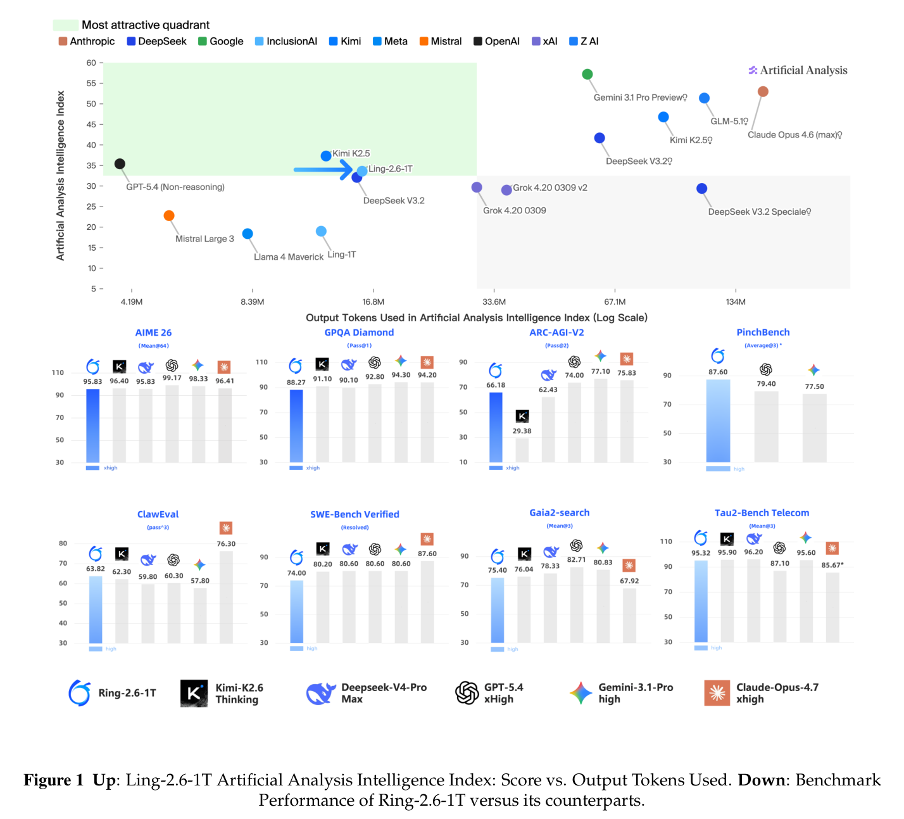
（页首短句已接入第 1 页引言。）
本报告介绍 Ling-2.6 和 Ring-2.6，这是面向万亿参数规模下高效、即时 agent 智能的模型家族。具体而言，Ling-2.6 针对即时响应和高 token 效率进行了优化，Ring-2.6 则针对投入可控的深入推理进行了优化。该模型家族的规模从 104B 到 1T 参数，开源了三个模型权重：Ling-2.6-flash、Ling-2.6-1T 和 Ring-2.6-1T。我们没有从头重新训练一个万亿参数模型，而是通过架构改造、持续预训练和大规模后训练，升级 Ling-2.0（Team et al., 2025b）基础模型。下文简要总结 2.6 家族的关键设计原则和结果。
高效的长上下文。只有得到高效利用，长上下文才有价值。在我们先前基于 GQA 的架构中（Ainslie et al., 2023; Team et al., 2025b），随着上下文长度增长，attention 成为主要瓶颈；超过 32K token 时，其占总 FLOPs 的比例超过 60%。为克服这一限制，Ling-2.6 和 Ring-2.6 采用统一的混合线性 attention 架构，以 7:1 的比例融合 Lightning Attention（Qin et al., 2024）和 MLA（DeepSeek-AI et al., 2024）。
（末句续自原文第 3 页；后续说明见下一页。）
这一设计在保持建模质量的同时，降低了长上下文计算成本、KV cache 压力和 decoding 延迟。与此同时，以新架构从头训练万亿参数模型的成本高得难以承受。因此，我们从 Ling-2.0 基础 checkpoint 出发，在约 9.6T token 上继续预训练，采用平滑的架构改造流程，包括混合初始化、QK Norm 吸收、Partial RoPE 适配和 MLA warmup。并行地，我们通过结合持续 MTP 训练的 speculative decoding、优化的 CP 通信，以及 linghe 融合内核库，同时改进服务与训练。这些改动共同带来了比基于 GQA 的 2.0 代模型更高的 decoding 吞吐量。
高 token 效率。token 效率是 Ling-2.6 的主要设计目标。我们不把较短回答视为表面上的文风偏好，而是优化每个生成 token 所承载的能力。在后训练中，我们结合 Evo-CoT、LPO 和双向偏好对齐，在保持推理保真度的同时提高信息密度（Team et al., 2025b）。Evo-CoT 去除冗余推理步骤，而不依赖简单的回答长度最小化；LPO 则将优化从 token 级动作转向语义连贯的语言单元，改善贡献归因，减少无效重复。双向偏好对齐奖励信息充分且满足约束的输出，并惩罚逻辑错误、幻觉和公式化的冗长表达。我们进一步采用最短正确回答蒸馏，提高每个 token 的能力。综合而言，这些方法在推理工作负载上的 token 效率约为 2.0 代的 4 倍。在 Artificial Analysis Intelligence Index 上，Ling-2.6-1T 仅使用约 16M 输出 token 就获得了 34 分，与非推理设置下的 GPT-5.4 相当。
原生 agent 优化。2.6 家族的 agent 能力通过直接训练获得，而非从聊天数据间接继承。我们构建广泛的 agent 语料，涵盖工具使用、编码、搜索、工作流执行和真实环境中的多轮交互，并配合可验证任务、结构化工具轨迹和基于环境的反馈。此外，Ring-2.6 引入新型 RL 算法 KPop，以二元 KL 散度替代 IcePop（Ling Team, 2025）中的统一固定比率约束，使 agent 强化学习更加稳定；结合将 rollout 收集与参数更新解耦的异步 RL，这使万亿参数规模下受环境约束的长轨迹成为可处理的训练对象。这一训练方案改善了模型在工作流与工具基准中的实际 agent 行为。Ring-2.6-1T 在 PinchBench 上达到 87.60，在 ClawEval 上达到 63.82，并在 GAIA-2 Search 和 τ2-Bench Telecom 上取得强劲结果。这些结果表明，agent 能力是 2.6 家族的原生训练目标，而不是薄薄一层指令微调。
总体而言，Ling-2.6 和 Ring-2.6 推动 agent 智能走向更实用的形态。架构提升长上下文效率；后训练方案提高每个 token 的智能；agent 训练栈提升真实环境中的可靠性。2.6 家族的基础 checkpoint 和后训练 checkpoint 均已开源。我们将与社区的努力（Qwen, 2026; DeepSeek-AI, 2026; Moonshot-AI, 2026; Zhipu-AI, 2026）一道，推进高效、开放 agent 智能的前沿。
2 预训练
长程 agent 任务需要高效处理超长上下文。在这一规模下，GQA 主导计算开销，但从头训练万亿参数替代模型会丢弃 Ling-2.0-1T 已投入的 20T token 训练成果。我们转而以 7:1 的混合比例，将 Lightning Attention 和 MLA 改造进现有 checkpoint，生成 Ling-2.5/2.6 和 Ring-2.5/2.6 家族共享的基础模型。线性 attention 将每个 token 的成本从 O(n²) 降为 O(n)；MLA 将 KV cache 压缩到低秩潜在空间。问题在于：这种架构移植能否在已训练模型上成功，以及所得基础模型是否仍适合下游专门化。第 2.1 至 2.4 节以 Ling-2.6-1T-base 为例，介绍架构设计、四阶段迁移策略、数据与训练方案及评测结果。
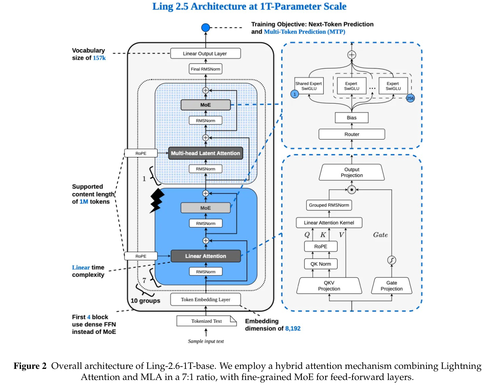
2.1 混合线性 Attention 改造
总体上，Ling-2.6-1T-base 纳入了三项关键架构创新，以实现高效的长上下文建模，同时保留 Ling-2.0-1T-base 模型的预训练能力。首先，我们开展 scaling laws 实验，确定最优混合比例，并验证持续训练期间的激进数据切换策略。随后，基于这些发现，我们设计了以 7:1 比例结合 Lightning Attention 与 MLA 的混合 attention 架构。这显著减少了长上下文场景中的推理 FLOPs 和 KV cache 内存。
（最后一句接续原文第 5 页。）
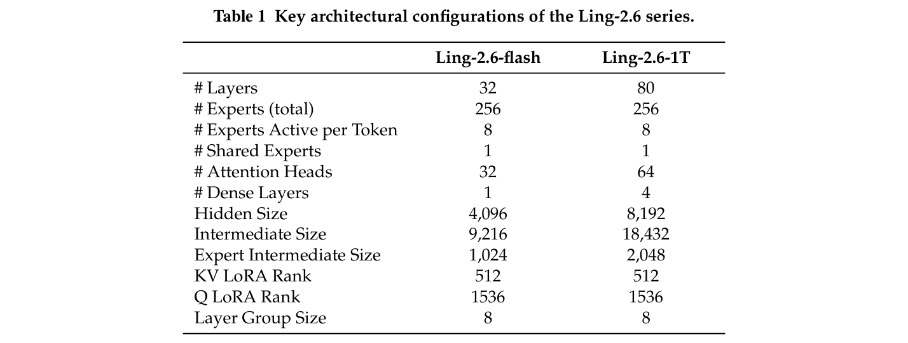
最后，我们开发平滑的多阶段迁移策略，使预训练的 Ling-2.0-1T-base checkpoint 能够在不损失性能的情况下完成转换。图 2 展示了整体架构，细节如下。
2.1.1 沿用的设计
基础配置。我们将 Transformer 层数设为 80，隐藏维度 \(d\) 设为 8,192。每层采用 64 个 attention 头，每个头的维度为 128。模型词表大小为 157,184，通过 \(\theta = 6,000,000\) 的 RoPE（Su et al., 2024）位置编码，支持最大 262,144 token 的上下文长度。我们采用 SiLU 作为激活函数，并采用 \(\varepsilon = 10^{-6}\) 的 RMSNorm 进行层归一化。旋转维度设为 64，即只对 attention 头的部分维度应用 Partial RoPE。
MoE。沿用 Ling-2.0，Ling-2.6-1T-base 为 FFN 采用细粒度 MoE 架构，设置路由专家和共享专家。每个 MoE 层包含 1 个共享专家和 256 个路由专家，每个路由专家的中间隐藏维度为 2,048。每个 token 激活其中 8 个路由专家。我们采用无辅助损失的负载均衡策略，启用专家偏置，路由器以 FP32 精度运行，并使用 sigmoid 评分。我们采用分组路由策略，设置 \(n_{group} = 8\) 个组，选择 top-4 组；使用归一化的 top-k 概率，路由输出乘以 2.5 的缩放因子。前 4 个 Transformer 块采用中间维度为 18,432 的稠密 FFN 层，而非 MoE 层。
2.1.2 混合比例选择
我们通过等 FLOPs 约束下的 scaling laws 实验，研究 Lightning Attention 层与 MLA 层的最优比例。定义层组大小 M，使每组包含 1 个全 attention（MLA）层和 \(M - 1\) 个线性 attention 层，并比较 \(M \in \{2, 4, 8, 16\}\) 的配置。图 3 展示 scaling laws 曲线，表 2 总结结果。
\(M = 8\) 的配置（线性与全 attention 的比例为 7:1）取得最佳缩放表现，同时显著节约推理成本，体现了模型质量与效率的最优平衡。
（末句在原文第 6 页接续。）
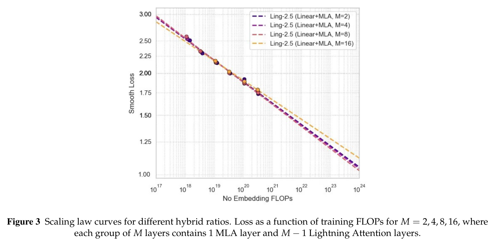
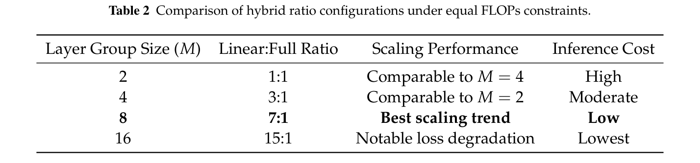
我们还观察到，随着总 FLOPs 预算扩大，可以适度提高线性 attention 层的比例，而不造成性能退化。基于这些结果，我们为 Ling-2.6-1T-base 选择了 7:1 的比例。
2.1.3 Attention 移植
随着上下文长度增加，attention 机制成为主要计算瓶颈。我们观察到，上下文窗口超过 32K token 时，计算成本明显从 MoE 层转移到 attention 层；在 256K+ token 时，全 attention（GQA）成为绝对的性能瓶颈。为此，我们设计混合 attention 架构，以 Lightning Attention 替换部分 GQA 层，同时将剩余全 attention 层从 GQA 转为 MLA，以压缩 KV cache。本小节介绍这两种 attention 组件，以及 MLA 转换所需的结构兼容性解决方案。
Lightning Attention 转换。我们沿用 Ring-flash-linear-2.0（Team et al., 2025a），将部分 GQA 层替换为线性的 Lightning Attention 层。转换时，沿 attention 头维度扩展 \(W_{qkv}\) 投影，将 GQA 的维度扩展为标准 MHA。新增参数随机初始化，并为线性 attention 机制引入额外门控参数 \(W_{gate}\) 和 gated \(norm \gamma _{gate}\)。在初始转换阶段，我们保留原架构中的 QK Norm 和 Partial RoPE，以稳定训练、改善 FP8 训练兼容性，并增强长上下文窗口下的稳健性。
MLA 转换。MLA 将键值对投影到低秩潜在空间，相比 GQA 可实现极高程度的 KV cache 压缩。我们在两个规模上通过消融实验验证了这一转换：mini 配置（总参数 16B、激活参数 1.3B）和 flash 配置（总参数 100B、激活参数 5B）。在这两种设置中，将全部 GQA 层替换为 MLA，训练 700B token 后再进行 600B token 的中期训练，最终性能均超过原始 GQA 基线。这一结果在纯 MLA 和混合 Linear+MLA 架构中均一致成立。
然而，直接将 Ling-2.0 的 attention 转为 MLA，会产生两项必须解决的结构不兼容问题。
QK Norm 不兼容。QK Norm 是非线性运算，会阻碍高效 MLA 推理所需的 KV 权重矩阵吸收。我们在 MLA 转换之前移除 QK Norm，以解决这一问题。利用 RMSNorm 的数学性质，我们将 QK Norm 参数近似融合进 query 和 key 投影权重。具体来说，对包含 \(N\) 个校准样本的数据集，我们计算 query 和 key 输出 \(q_{ij}\)、\(k_{ij}\) 的逐维统计量（\(i\) 为样本，\(j\) 为头维度 \(d\) 内的维度），并推导修正投影权重 \(\hat{W}_{q}\)、\(\hat{W}_{k}\)，以吸收 QK Norm 参数 \(\gamma _{Q}\)、\(\gamma _{K}\) 的影响：
这一基于校准的融合有效移除了非线性的 QK Norm，同时保留其归一化效果，使后续 MLA 权重吸收成为可能。
位置编码不兼容。TransMLA（Meng et al., 2025）原生支持 Full RoPE，而 Ling-2.0-1T-base 使用 Partial RoPE，只对部分头维度施加 RoPE。我们通过解耦 RoPE 模块解决这一问题：将受 RoPE 影响的维度与不受影响的维度分离，只在受影响维度上应用基于 PCA 的权重旋转，再将结果拼接，重建完整表示。这种解耦处理在保留 Ling-2.0 的 Partial RoPE 结构的同时，实现了正确的 TransMLA 转换。
2.2 预训练语料
2.2.1 领域专用语料
Agent 语料。agent 语料代表预训练数据的范式转变：它超越静态文本，转向捕获 agent 在实际部署中经历的完整信息流、决策路径和环境动态的数据（Zeng et al., 2026b）。该语料具有极高的任务多样性，涵盖 agent 工具使用和 agent 编码两个主要领域。具体而言，我们利用超过 500 个真实世界 MCP 环境、覆盖超过 3,000 种不同工具，构建广泛的工具使用任务。
（末句接续原文第 8 页。）
与此同时，我们合成大规模、多样化的编码任务，整合 bash 命令、基于网页的问答和相关软件仓库。随后，我们采用基于模型的质量过滤，确保任务的相关性、逻辑连贯性和适当难度。之后，使用多种教师模型和不同交互框架生成 agent 轨迹，并结合严格的规则验证和模型验证，保证轨迹质量。
长上下文语料。为将上下文窗口扩展至 256K，并缓解自然数据分布中高质量超长语料稀缺的问题，我们同时强调定向检索和数据合成，构建覆盖多个领域的超长语料，包括数学、复杂网页解析、长文档摘要、RAG 融合及多跳推理。
同时，我们进一步强化质量保障流程。具体而言，通过引入融合规则方法和模型方法的深度检测框架，我们能够有效识别并移除超长文本中的常见缺陷，包括过度自我重复、结构崩塌和长距离语义幻觉。该流程还用于重新清洗和优化现有长上下文数据的一部分。
2.2.2 通用语料
网页语料。为在预训练期间提升模型的通用知识，我们基于宽表基础设施和 fastText（Joulin et al., 2016）构建了高效的通用特征工程流程，支持按小时迭代模型、按天更新特征。我们从大规模网页索引中，开展定向 STEM 数据召回、面向问答的检索，以及通过内部搜索引擎进行的闭环检索，并将检索出的网页内容进一步改写为噪声更少、逻辑结构更强的教材式材料，有效缓解 Common Crawl 的知识覆盖局限。为进一步改善模型事实问答能力，我们观察到，长文本中分散 embedding 的事实难以被模型有效学习。为解决这一问题，我们开发了原子事实构建流程，将 Wikipedia 文章转为独立命题和结构化三元组，并配合多策略问答合成流程，进行细粒度知识增强。实验结果表明，该方法显著降低了事实记忆的难度，并有效增强了模型的事实问答能力。
数学与代码语料。数学和编程语料仍是预训练数据的核心组成部分。针对本次发布，我们通过语料改写，以及挖掘范围更广的高质量网页内容、全面的文献和源代码仓库，系统地扩充和优化了这些专门语料。
多语言语料。为缓解先进多语言模型在常用语言间的性能差距，我们优先扩大 21 种语言的单语言语料覆盖范围，重点增加阿拉伯语、日语和印地语。在数据组成方面，我们纳入开源语料 Fineweb2（Penedo et al., 2025）和 Fineweb2-hq（Messmer et al., 2025）的 1.1T token（覆盖 8 种关键语言），并引入约 70B token 的合成网页代码数据，以增强领域专用表示能力。
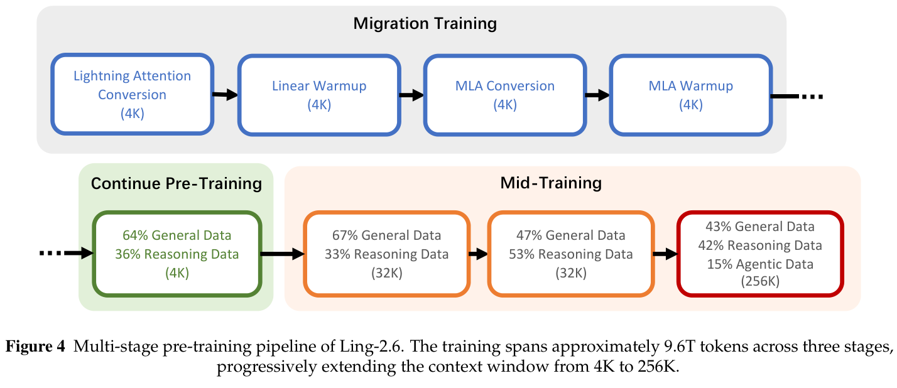
在迁移预训练和持续预训练期间，多语言数据占全部数据集的 4%；其内部划分为 70% 的网页语料——覆盖罗曼语族、日耳曼语族、斯拉夫语族和东南亚语族——以及 30% 的能力导向混合数据，包括数学、代码、考试、合成网页和平行语料。中期训练则去掉通用网页数据集，仅保留高价值的能力类别——数学推理、代码、考试、合成数据和平行语料——以形成低噪声、聚焦能力的分布。
2.3 预训练方案
Ling-2.6 的预训练基于 Ling-2.0 语言模型 checkpoint，沿用其关键超参数，并在三个阶段中处理约 9.6T token。
2.3.1 超参数
Ling-2.6-1T-base 沿用 Ling-2.0-1T-base 的 MoE 主干，并进一步引入混合线性 attention 架构。关键架构参数随模型规模变化，详见表 1。对于训练超参数，我们首先在混合线性 attention 架构上重新建立 Ling scaling laws，以根据总训练预算确定适当的学习率与 batch 大小。我们采用无辅助损失的负载均衡策略，在持续预训练期间将偏置更新率 \(\gamma\) 设为 0.001，中期训练则降至 0.0001。MTP 损失权重设为 0.1。其余超参数均与 Ling-2.0 一致。我们继续使用 Ling-2.0 的 WSM 调度器：先线性 warmup 至峰值学习率，再保持恒定直至训练结束；最终退火效果通过 checkpoint 合并实现。
2.3.2 多阶段训练
如图 4 所示，预训练在三个阶段处理约 9.6T token：迁移预训练、持续预训练和中期训练。
迁移预训练。从 Ling-2.0 基础 checkpoint 出发，该阶段将架构从基于 GQA 的 Softmax Attention 平滑迁移到带 MLA 的混合线性 attention，同时尽量减小性能退化。整个过程分四步，处理约 400B token。
首先进行 Lightning Attention 转换：沿头维度扩展 \(W_{qkv}\) 参数，初始化新的门控参数 \(W_{gate}\) 和 \(\gamma _{gate}\)，将部分 GQA 层转为 Lightning Attention，同时保留 QK Norm 和 Partial RoPE 以稳定训练。随后在线性 warmup 阶段，除 \(W_{qkv}\) 和 QK Norm 权重外，冻结所有参数。用少量数据进行学习率 warmup，使损失恢复至转换前水平，让随机初始化的线性 attention 参数与预训练表示对齐。第三步是 MLA 转换，包含三个依次执行的操作：（1）通过第 2.1.3 节描述的校准融合移除 QK Norm；在 mini 规模上，这会将测试 PPL 从 6.65 提高至 11.13，是可控且可恢复的退化；（2）短暂进行部分参数训练（仅解冻 \(W_{qkv}\)、QK Norm、\(W_{gate}\) 和 \(\gamma _{gate}\)），配合学习率 warmup，缓解移除 QK Norm 的影响；（3）通过 Partial RoPE 适配和 TransMLA（Meng et al., 2025）转换实现结构转换。最后，MLA warmup 冻结未被结构修改的参数，通过学习率 warmup 使损失恢复至转换前水平。迁移预训练结束时，模型已完全采用目标混合线性 attention 架构，可进行大规模持续训练。
持续预训练。迁移预训练后，解冻所有参数，在 4K 上下文窗口下使用 8T token 进行完整持续训练。数据混合中约 46% 分配给推理密集领域（如数学和代码），50% 分配给通用语料（如网页文本），4% 分配给多语言数据。在初步实验中，我们比较了两种数据切换策略：（1）保守方法，先用原始预训练数据训练 2T token，恢复模型能力，再引入新的更高质量数据；（2）激进方法，从该阶段开始就引入新数据。激进策略表现更佳：早期接触高质量数据加快能力恢复，减少所需总 token 数，并获得更高的最终性能上限。因此，我们在 Ling-2.6 持续预训练中采用激进策略。
译注：图 4 的持续预训练框标注为 64% 通用数据、36% 推理数据；本段正文标注为约 50%、46% 和 4%。两处按原文保留，未将其统一。
中期训练。在中期训练阶段，我们启用长上下文，在高质量数据上训练，以优化能力并扩展上下文窗口。该阶段包含约 1.2T token，分三个阶段。第一阶段训练 250B token，20% 的序列采样为 32K 长度，数据混合与上一阶段相似，将模型有效上下文窗口从 4K 扩展至 32K。学习率保持持续预训练继承的峰值。第二阶段在 32K 上下文长度下处理 425B token，显著提高高质量数据比例。第三阶段处理 525B token，将上下文窗口扩展至 256K，同时保持高质量数据混合。
2.4 预训练评测
基准与配置。为系统评估基础模型能力，我们采用广泛的基准套件，覆盖数学、编码、推理、语言理解、世界知识和长上下文理解六个关键领域。套件共包含 31 个评测基准，分为以下类别：
- 数学：GSM8K（Cobbe et al., 2021）（4-shot, CoT）、CMath（Wei et al., 2023）（3-shot, CoT）、MathBench（Liu et al., 2024）（4-shot, CoT）、OlympiadBench（He et al., 2024a）（3-shot, CoT）、OmniMath（Gao et al., 2025）（3-shot, CoT）、GKMathUnion（4-shot, CoT）。GKMathUnion 是内部排行榜，由 GaoKao 2023 En（Liao et al., 2024）和 GaoKao 组成，后者包括 GaoKao I/II 20241、GaoKao-Math-QA（Zhong et al., 2024）、GaoKao-Math-Cloze（Zhong et al., 2024），以及收集的 91 道 2024 年高考题。
（数学列表项接续原文第 11 页。）
- 编码：HumanEval-Plus（Liu et al., 2023a）（0-shot）、HumanEval-Fim（Bavarian et al., 2022）（0-shot）、MBPP-Plus（Liu et al., 2023b）（3-shot）、LiveCodeBench2（Jain et al., 2025b）（0-shot）、BIRD-SQL（Li et al., 2023）（0-shot）。
- 通用推理：BBH（Suzgun et al., 2023）（3-shot, CoT）、BBH-zh（Li et al., 2025）（3-shot, CoT）、KorBench（Ma et al., 2025）（3-shot）、CommonSenseQA（Talmor et al., 2018）（5-shot）、WorldSense（Hong et al., 2025）（0-shot）、AutoLogi（Zhu et al., 2025）（3-shot, CoT）、ZebraLogic（Lin et al., 2025）（1-shot）。
- 语言理解：Squad 2.0（Rajpurkar et al., 2018）（1-shot）、Belebele（Bandarkar et al., 2024）（0-shot）。
- 世界知识：MMLU（Hendrycks et al., 2021）（5-shot）、MMLU-Pro（Wang et al., 2024）（5-shot）、GPQA（Rein et al., 2023a）（0-shot）、SuperGPQA（Team et al., 2025c）（5-shot）、TriviaQA（Joshi et al., 2017）（5-shot）、SimpleQA（Wei et al., 2024）（5-shot）、\(C\)-SimpleQA（He et al., 2025b）（5-shot）、mARC（Dac Lai et al., 2023）（0-shot）、MMMLU3（OpenAI, 2024）（0-shot）。
- 长上下文理解：LEval（An et al., 2023）（0-shot）、LongBenchv2（Bai et al., 2025）（0-shot）。
所有评测均在内部评测框架中进行，使用各基准相同的专用配置，确保四个基础模型公平比较：Ling-2.0-flash-base、Ling-2.6-flash-base、Ling-2.0-1T-base、Ling-2.6-1T-base。
评测结果。表 3 展示了 Ling-2.6-1T-base 模型和 Ling-2.0-1T-base 模型的评测结果。总体而言，Ling-2.6-1T-base 基础模型相比之前版本，取得广泛、一致的提升，尤其在知识密集型评测、长上下文建模，以及保持强大数学和编码能力方面：
- 世界知识的显著提升：Ling-2.6-flash-base 和 Ling-2.6-1T-base 在英语、中文及多语言的世界知识导向评测中均大幅改善。相比 Ling-2.0-1T-base 模型，它们在 GPQA、SimpleQA 和 MMMLU 等代表性基准上明显提升。这有力证明了持续训练引入的高质量知识数据已被模型有效内化，形成更强、更可迁移的知识表示。
- 长上下文与推理能力增强：长上下文建模和推理密集型评测也明显改善。Ling-2.6-1T-base 基础模型能更有效地处理更长输入、保持长距离依赖，并从长上下文中识别任务相关信息，同时展现更强的多步推理与问题求解能力。这些能力为后训练期间增强 agent 能力提供了更强的基础模型支撑。
- 持续训练下稳健的数学与代码表现：虽然额外训练大幅提升知识、长上下文与推理能力，但模型在数学和编码基准上仍保持强劲表现，没有明显退化。尤其在 MathBench、LiveCodeBench 等代表性基准上进一步提升，表明该训练策略有效缓解了知识扩展与推理密集型能力之间常见的“跷跷板效应”。
（最后一个列表项接续原文第 12 页。）
1 https://github.com/llmeval/Llmeval-Gaokao2024-Math
2 LiveCodeBench 包含 2024 年 8 月至 2025 年 5 月发布的 454 道题。
3 不同基线的 MMMLU 语言覆盖范围可能不同。
（页首续接段落已合并至第 11 页最后一个列表项。）
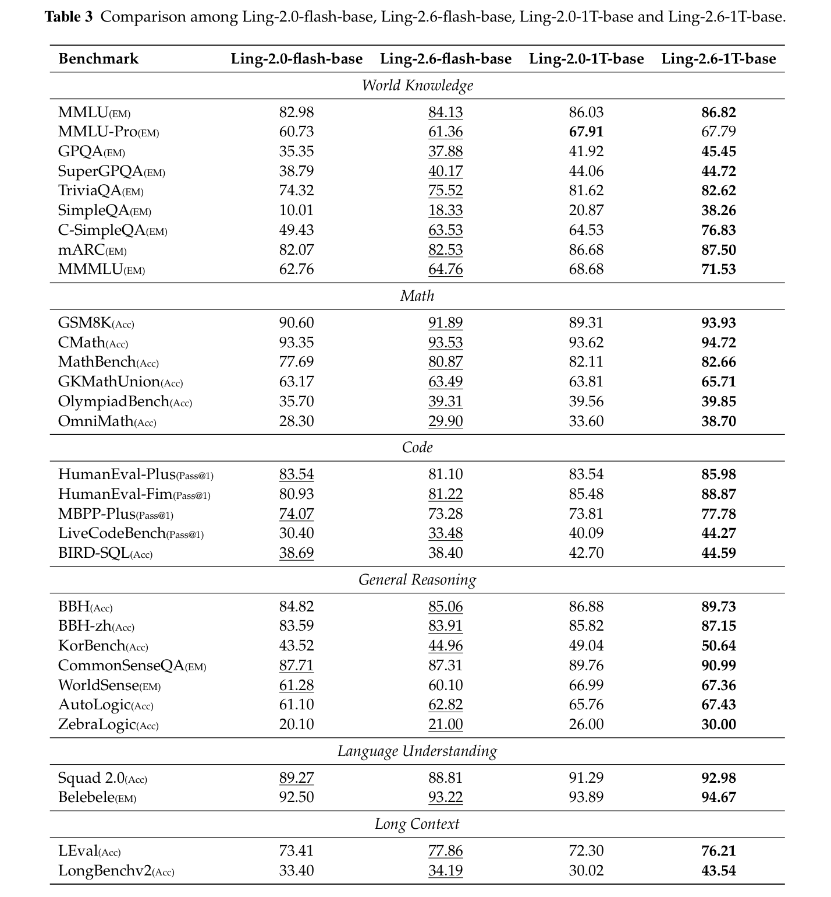
3 后训练
Ling-2.6 和 Ring-2.6 的后训练从共享基础模型开始，但优化目标不同。Ling-2.6 作为即时响应模型开发，强调快速响应、高 token 效率和基础 agent 能力。Ring-2.6 采用相似的整体框架，但更强调更强的推理和更高级的 agent 智能。
3.1 Ling-2.6 的后训练
与 Ling-2.0 采用的统一后训练策略不同，Ling-2.6 采用专家驱动的训练范式，系统提升不同领域的能力。为此，SFT 分两阶段：初始冷启动 SFT 阶段，随后进行专门的专家微调。之后使用强化学习（RL）进一步增强每个专用模型。最后，将学到的领域专用能力蒸馏回统一的 Ling-2.6 模型。这一先专门化再蒸馏的框架，旨在最大化能力密度，同时保留实际部署所需的快速响应特性和 token 效率。此外，我们还采用多个 MTP 层的持续后训练来加速 speculative decoding（见附录 B）。
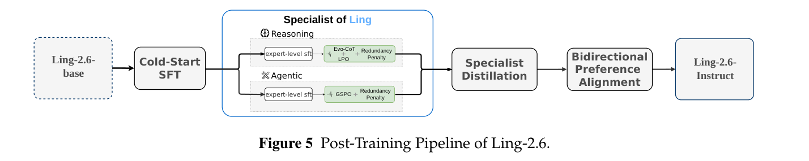
3.1.1 SFT 语料
为后续 RL 中的专门化提供稳定初始化，Ling-2.6 的 SFT 语料审慎平衡推理、长上下文窗口和 agent 工具使用场景。这一基础旨在支持高 token 效率的即时响应、深入的长上下文推理和稳健的 agent 行为。
推理。我们构建涵盖数学、STEM、编码和逻辑的多样化推理数据集。为保持平衡的难度分布，所有样本均通过基于模型的通过率标注进行验证。我们以高难度竞赛题显著扩充数学部分，扩大化学和生物学的科学覆盖，并引入超过 50,000 条合成的命题逻辑与视觉领域逻辑查询。此外，我们纳入覆盖多种编程语言的 agent 编码任务，如仓库探索、调试和测试生成。这些可验证、难度受控的数据集共同为推理导向 RL 提供最佳目标。
agent。针对 agent 行为和工具使用，我们基于可扩展、可执行环境构建 RL 数据，覆盖超过 200 个真实与合成工具包（如搜索工具、Model Context Protocol 服务器）。这些环境提供超过 2,500 个可调用函数，涵盖搜索、电子商务、金融和科学计算。基于这一基础设施，我们生成可验证的工具使用轨迹，涵盖拒绝无关工具、长程单轮执行及交互式多轮任务（He et al., 2025a）。通过同时采用围绕种子和围绕关键工具链的合成方式，所得语料训练模型开展准确、简洁且高效的 agent 交互。
（末句接续原文第 14 页。）
长上下文。我们通过专门语料，将后训练上下文窗口扩展至 256K token，语料包括书籍、学术论文、代码仓库、财务报告和网页数据。为明确增强长上下文推理，我们聚焦数字密集型语料。通过策略性地合并多家公司及跨年度财务报告，合成长上下文，形成高密度、结构化摘要。我们不采用简单检索，而是生成多跳计算问题，迫使模型跨这些长上下文推理。为确保数据质量，我们采用严格的验证流程：自动沙箱执行代码，评估数值准确性，再由人在环验证，确保仅保留高质量、完全对齐的推理轨迹用于训练。
3.1.2 Ling 专用模型训练
冷启动 SFT 后，流程转向专用模型训练阶段，开发各个专家模型。该阶段将专家级 SFT 与定向强化学习（RL）结合。核心目标是在严格的 token 效率约束下，最大化即时响应质量，为最终蒸馏进 Ling-2.6 准备这些专门能力。
推理。为赋予自适应推理能力并抑制冗长表达，我们实施一套贯通数据优化与奖励设计的策略。首先使用自有专家模型生成回答，优化 SFT 推理数据，严格只保留最短的正确候选。为进一步消除“过度反思”模式——即找到正确答案后仍发生冗余二次反思——我们使用 LLM 评判器剪除这些片段。这种数据层面的干预使平均输出长度减少 200 至 300 token。
在 RL 阶段，我们基于 Ling-2.0（Team et al., 2025b）的 Evo-CoT 框架。从优化后的 SFT checkpoint 开始，用明确惩罚冗余的复合奖励系统训练模型：
- 准确性（\(R_{acc}\)）：最终答案与真实答案匹配时为 +1，否则为 0。
- 格式（\(R_{format}\)）：生成显式推理标记（如 “
” 标签）时惩罚 −0.5，以强制即时响应格式。 - 动态长度惩罚（\(R̂_{length}\)）：惩罚超过特定难度长度限制的回答。它允许困难任务进行详细推理，同时严格限制简单任务的长度：
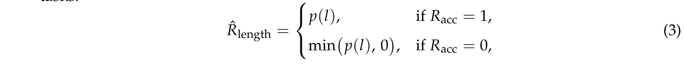
其中 p(l) 定义为：
这里，\(l\) 表示采样回答的 token 长度，\(\ell _{min}\) 和 \(\ell _{max}\) 分别表示给定查询所有样本中的最短和最长长度。
- 语义冗余惩罚（\(R_{redundancy}\)）：只依赖 token 长度不足以控制重复的内部反思。因此，我们将模型的认知过程分段，使用 LLM 评判器评估每段的语义冗余。被识别为逻辑循环或冗余的片段被归一化为额外惩罚项 \(R_{redundancy}\)，有效迫使模型高效思考。
（最后一项接续原文第 15 页。）
agent。针对 agent 任务，我们采用专门面向高 token 效率工具使用的 GSPO（Zheng et al., 2025）。为此，引入两种专用奖励信号。首先，过程奖励衡量模型预测轨迹与最优真实工具调用序列的对齐程度（Qian et al., 2026），惩罚不必要或探索性调用，鼓励简洁执行。其次，使用 zlib 压缩比施加基于压缩的重复惩罚。高度重复、退化的输出容易压缩，因此会受到相应更严厉的惩罚，自然促进简洁、连贯的回答。
除奖励设计外，我们通过称为动态通过率评级（DPR）的新样本选择策略提升训练效率。DPR 不依赖静态历史通过率，而是基于训练行为动态评估任务难度。从时间视角看，训练早期就解决的任务被视为简单；从稳定性视角看，始终保持高通过率的任务也被如此归类。反之，持续未解决或不稳定的任务被优先认定为困难任务。由此形成自适应课程，持续将训练资源聚焦于模型当前能力边界附近的信息量较高样本。
3.1.3 双向偏好对齐
作为 Ling-2.6 效率导向后训练的最终阶段，我们引入双向聚焦奖励机制。这使模型与细粒度人类偏好对齐，同时主动保留简洁、信息密集的回答。不同于传统单向模型，我们将正向激励与负向惩罚整合进同一个 RM，扩大评分范围，提供信噪比显著更高的偏好 gradient。为防止模型仅靠增加输出长度来钻奖励空子，我们设计聚焦奖励机制（Huang et al., 2026）。通过监测不同评分准则维度上的 on-policy 饱和程度，动态将训练权重从已饱和指标转向有待改善的维度。
对于复杂任务，我们以专门评估器补充这一通用机制。针对长篇写作，我们提出 ReportLogic 框架（Zhao et al., 2026），评估宏观结构和篇章组织，将优化目标从表面流畅性转向深层文本逻辑。对于多方面的指令遵循，独立验证 agent 将请求分解为明确的逐项规则，进行细粒度验证。虽然这些任务专用奖励各自在对应领域运行，但双向聚焦奖励仍是通用查询的根本驱动力，确保 Ling-2.6 持续提供高质量、高 token 效率的即时响应。
3.2 Ring-2.6 的后训练
基于 Ring-2.0（Ling Team, 2025）的后训练基础，Ring-2.6 通过专用模型训练，进一步优化复杂、长程、工具密集型 agent 行为。目标不仅是提高最终任务成功率，还包括增强真实执行约束下的规划、搜索、工具使用和自适应交互。具体而言，我们构建涵盖编码、搜索和通用工具使用任务的大规模 agent 后训练混合数据，为其配备可复现执行环境，并开发适用于可验证长程行为的 agent 强化学习流程。这些组件共同定义了长程 agent 优化阶段。
（末两句接续原文第 16 页。）
完成推理和 agent 任务的专用模型训练后，我们采用专用模型蒸馏进一步提升整体性能。此外，训练流程引入自适应思考，以兼顾日常使用和有挑战性的推理问题。自适应思考包含 SFT 与 RL 两个阶段。high 模式采用适度长度惩罚，平衡推理深度与响应简洁性；xhigh 模式采用极小长度惩罚，在复杂推理问题上最大化推理深度。
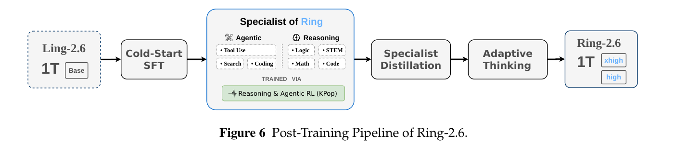
3.2.1 工具使用数据
工具使用数据支持在真实约束下持续执行 agent 任务，强调三种互补能力：仓库级编码、移动和网页环境中的信息寻找，以及需要规划并从中间失败中恢复的通用工作流。在所有设置中，我们优先关注可验证性、环境真实性与交互多样性。
编码 Agent 任务
我们大规模挖掘 GitHub 的 PR-Issue 对，用真实软件工程工作流训练编码 agent。从完整 GH-Archive（2015 年 12 月至 2023 年，约 1B 条记录）出发，只保留 star 数 >100 的仓库，要求 PR 已合并并关联已关闭 issue，且每个 PR 必须包含测试补丁以确保可验证性。排除与现有 SWE 基准重叠的仓库以防污染。LLM 将 PR 关联到对应 issue，产生约 300K 个原始对。结合附录 A 描述的可复现执行环境，这些实例为 agent 强化学习提供严格的任务。
搜索 Agent 任务
移动应用搜索。受 Meta ARE（Froger et al., 2025）启发，我们构建带有状态应用的合成个人数字世界，包括联系人、消息、邮件、日历、购物、出行、公寓和文件。每个世界保持跨应用实体一致性，并引入容易混淆的相似实体及用于聚合的数值字段。可验证任务按目标优先方式合成：将可执行操作链与确定性答案配对，再改写为自然请求。基于规则与验证器的过滤去掉不一致或可通过捷径解决的实例。
网页搜索。从 Wikipedia 图中的长尾种子实体出发，向外扩展，积累单独看模糊、合起来却能唯一确定答案的约束，再使用间接指代将其改写为自然问题，以抵抗词汇捷径。
无需检索即可回答的实例会被过滤。轨迹通过真实工具执行收集，只保留正确解法，过滤冗余工具调用与捷径式模式。这两类数据共同强化真实交互和上下文约束下的信息寻找能力，构成 agent 后训练混合数据的重要组成部分。
通用 Agent 任务
除编码与搜索外，自主 agent 还必须处理涉及多步规划、策略遵循和错误恢复的多样化工具使用场景。我们沿四个互补方向构建通用 agent 训练数据：
- 遵循策略的多轮工具调用：五阶段流程在业务策略约束下合成交互任务，覆盖边界条件和渐进难度。奖励信号由环境状态验证、工具调用序列匹配和自然语言断言组成，同时生成 SFT 轨迹与 RL 任务数据。
- 与执行框架无关的工作流任务：将覆盖生产力、研究、编码、数据分析及文档理解的可验证工作流任务，围绕可移植抽象（用户请求、工具 schema、观察、验证信号）进行规范化，使其可跨执行框架复用。
- 大规模 MCP 合成：在覆盖 12 个领域、超过 2,400 种工具的 197 个已验证 MCP 服务器上合成多轮轨迹，要求工具选择、错误处理和组合使用。包括对抗性服务器检测和跨 batch 去重的多层质量控制确保数据保真度。
- 通用工具使用任务：扩展至搜索、电子商务、金融和科学计算领域的超过 170 个合成工具包（>2,300 个可调用函数）。任务涵盖无关工具、长程单轮和交互式多轮设置（He et al., 2025a），各自通过环境状态与关键工具调用检查验证。任务采用围绕种子（Fang et al., 2025）和围绕关键工具链的范式生成。
为保持训练效率，我们采用动态通过率评级（DPR）策略，根据训练动态选择任务：早期掌握或始终高通过率的任务被视为简单，持续未解决的任务则被视为困难。这确保模型训练于当前能力边界上最有信息量的样本。
上述编码、搜索和通用数据共同构成 agent 后训练混合数据的核心。如第 3.3 节所述，该数据方案在 SWE-bench、GAIA2 Search、BrowseComp、τ2-bench、PinchBench 和 ClawEval 上产生了有竞争力的结果，证实编码、搜索和通用工具使用能力的一致提升。
3.2.2 Agent 强化学习
任务混合与执行环境就绪后，我们通过专为可验证长程行为设计的 agent 强化学习流程训练 Ring-2.6。我们开发基于函数调用能力的轻量 agent 框架，配备三个核心工具：（1）execute_bash，用于通用 bash 命令执行；（2）search_replace，用于精确文件编辑；（3）task_done，用于标记任务完成。训练时最大对话长度为 200 轮，评测时为 500 轮。
我们从冷启动模型出发，在 AEnvironment4 支持的沙箱环境中进行强化学习。SWE 任务天然具有长程性质，通常需要 30 至 200 个求解步骤。为提高训练效率，我们采用多个过滤阶段，移除冗余与低质量实例：
- 不稳定实例：移除标准补丁偶尔无法通过给定测试的实例。
- 非代码编辑：排除标准补丁涉及源代码之外改动的实例（如仅修改配置或文档）。
- 基于复杂度的选择：计算冷启动模型在每个实例上的通过率，作为复杂度估计，仅保留通过率为 0.1–0.9、且带有人类专家标注的清晰 issue 描述的实例。
- 按仓库去重：为保持多样性，每个仓库最多保留 3 个实例。
最终训练集包含约 2,500 个实例，来自 1,550 个仓库，涵盖超过 30 种编程语言，包括 Python、Java、C、Rust 和 JavaScript。
为防止模型通过信息泄漏利用奖励信号，我们采用两种保障机制。首先，通过限制 Git 历史访问，从 git log 命令中移除 --all 标志，使模型只能看到当前分支的提交历史。其次，通过实时监测，在训练过程中持续检测钻奖励空子的行为。分析表明，约 0.2% 的轨迹出现作弊模式，在实践中仍可忽略。
3.2.3 KPop：通过二元 KL 散度约束不匹配
在 Ring-1T（Ling Team, 2025）发布时，我们提出 IcePop，通过双侧掩码改善 MoE 模型强化学习的训练稳定性。然而，我们观察到，统一的恒定比率约束隐含地假设了不同 token 间不成比例的不匹配，无法反映不同 token 概率引起的异质训练与推理差异。因此，我们引入 KPop（Guo et al., 2026），以二元 KL 散度替换统一固定比率约束，更好地捕获高概率和低概率区域中异质的 token 级不匹配。技术细节见博客5。
回顾 IcePop 的表达式：
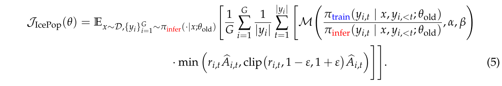
IcePop 在固定全局范围 \([\alpha , \beta ]\) 内，对策略概率比率施加统一的恒定比率约束，并辅以双侧掩码；恒定比率阈值不论 token 概率如何，都以相同方式处理所有 token。但实际上，比率中的噪声并不在各 token 间均匀分布，因为比率偏差取决于 token 概率（Guo et al., 2026）。因此，IcePop 往往对低概率 token 施加过多掩码。
（末两句接续原文第 19 页。）
4 https://github.com/inclusionAI/AEnvironment
5 https://ringtech.notion.site/kpop
KPop 用对称二元 KL 准则替换 IcePop 的恒定比率边界。对每个输出 token \(y_{t}\)，我们计算 \(\pi _{train}(y_{t})\) 与 \(\pi _{infer}(y_{t})\) 之间的二元 KL 散度，将整个词表看作两个事件的划分：当前采样 token 与所有其余 token。
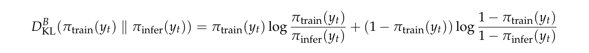
非对称变体仅检查正向或反向中的一个方向。对称 KPop 掩码要求两个方向的二元 KL 都较小。
整个机制由单个超参数 \(\phi\) 控制。
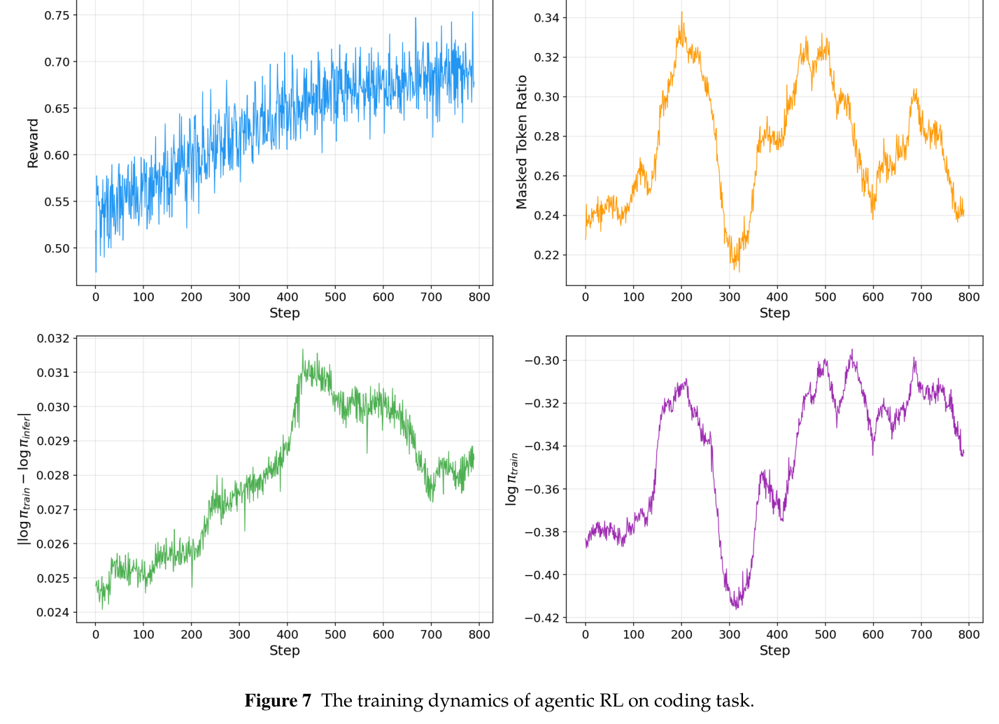
实验结果。得益于 KPop，如图 7 所示，奖励曲线在整个训练中稳步上升，从初始 0.54 提高到约 0.68，说明策略持续改善。图 8 展示了 RL 训练期间的评测结果。
（末句接续原文第 20 页。）
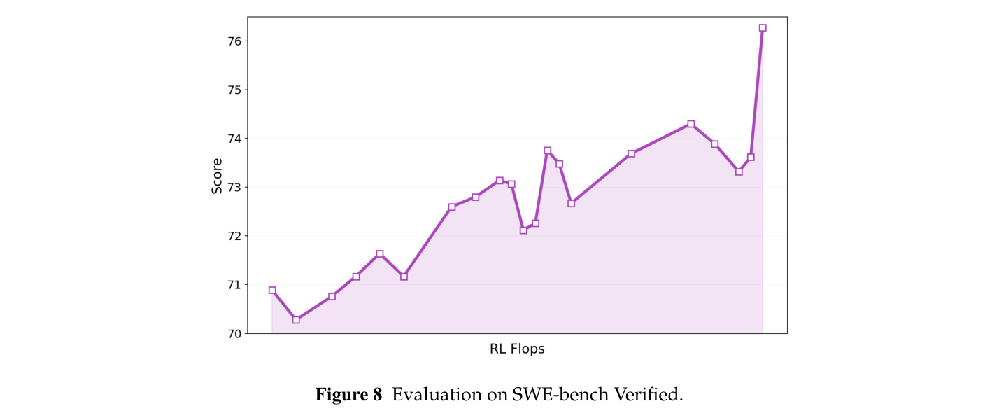
值得关注的是，KPop 使轻量 agent 上的 agent RL 能够有效扩展，将 SWE-bench Verified 解决率从 70.8% 提高至 76.28%，展示了 KPop 在大规模 agent RL 中的潜力。所有报告的评测结果均为三次独立运行的平均值。
3.3 评测
本节对 Ling-2.6 和 Ring-2.6 在广泛基准上进行全面评测，覆盖知识、推理、agent 行为、指令遵循和长上下文理解。评测不仅评估整体能力，也评估两个模型家族各自的优化目标。具体而言，Ling-2.6 作为针对快速响应与 token 效率优化的即时响应模型接受评测；Ring-2.6 则作为推理与工具使用能力增强、更强的长程 agent 模型接受评测。这些结果共同提供了对旗舰模型能力画像与专门化的系统性认识。
3.3.1 Ling-2.6 评测
我们全面评测 Ling-2.6 系列模型，具体包括高性能的 Ling-2.6-1T 和轻量版本 Ling-2.6-flash。其能力通过知识、推理、agent 能力、指令遵循和长上下文理解五大领域的多样化基准评估。我们将其与广泛的先进系统比较，包括领先专有模型的非推理或即时模式（如 Kimi-K2.5、GPT-5.4、GLM-5、Nemotron-3-Super、DeepSeek-V3.2）。
基准
为全面评估 Ling-2.6 系列模型，我们在广泛基准上开展评测，主要覆盖知识、推理、agent 能力、指令遵循和长上下文理解五个领域。
- 知识：\(C\)-SimpleQA（He et al., 2025b）（Correct）、SimpleQA-Verified（Wei et al., 2024）（Correct）、GPQA-Diamond（Rein et al., 2023b）（Mean@4, CoT）、SuperGPQA（Team et al., 2025c）（EM, CoT），以及 Humanities-Last-Exam（Phan et al., 2025）（Mean@4）。
（知识列表项接续原文第 21 页。）
- 推理：AIME 20266（Mean@64, CoT）、HMMT（Nov25, Feb26）（Balunović et al., 2025）（Mean@64, CoT）、IMO-AnswerBench（Luong et al., 2025）（Mean@8, CoT）、LiveCodeBench-v6（Jain et al., 2025a）（Mean@4）、bbeh（Kazemi et al., 2025）（Pass@1），以及 ARCPrize（Chollet et al., 2024）（Mean@4）。
- agent：SWE-bench Verified（Jimenez et al., 2024）（Claude Code, openhands fc）、PinchBench7（Mean@5）、ClawEval8（Pass@3）、BFCL-V4（Yan et al., 2024）（Accuracy）、τ2-bench（Barres et al., 2025）（Mean@4，用户模型为 gpt-5.2，包含 Average、Retail、Airline、Telecom），以及 terminal-bench 2.0（Merrill et al., 2026）（Accuracy）。
- 指令遵循：IFBench（Pyatkin et al., 2025）（Mean@5）、LIFEBench（Zhang et al., 2026）。
- 长上下文与对话：LongBenchv2（Bai et al., 2025）（Accuracy）、MRCR（Vodrahalli et al., 2024）（Mean@16K-256K）、Multichallenge（Deshpande et al., 2025）（Accuracy），以及 Multi-IF（He et al., 2024b）（turn-3）。
我们将 Ling-2.6-1T 和 Ling-2.6-flash 与多种领先和开源模型进行评测比较。比较包括专有模型的不同非推理或即时响应配置，如 Kimi-K2.5、DeepSeek-V3.2、GPT-5.4、GPT-5.4-mini、GLM-5、GLM-4.5-Air、Nemotron-3-Super-120B-A12B 和 GPT-OSS-120B。
结果
表 4 和表 5 的评测结果表明，Ling-2.6 系列模型在多个领域具备强大而全面的能力。
知识。两个模型在知识基准上均表现强劲。Ling-2.6-1T 在 C-SimpleQA 上取得顶尖水平的 76.53，在 SimpleQA-Verified 上取得领先的 31.50，超过大多数竞争者。虽然 Kimi-K2.5 在 GPQA-Diamond（80.52）和 Humanities-Last-Exam（12.92）等高度专业化考试中占优，但 Ling-2.6-1T 仍十分有竞争力。同时，轻量 Ling-2.6-flash 在 C-SimpleQA 上以 60.23 领先其比较组，超过 GPT-5.4-mini（59.73）等快速模型。
推理。推理领域凸显 Ling-2.6-1T 的突出实力。它在多数有挑战性的推理基准中取得最高分，确立明显领先地位，包括 AIME26（87.40）、HMMT-Nov25（81.93）、IMO-AnswerBench（65.81）、bbeh（52.37）和 ARCPrize（50.94）。这一表现显著超过其他非思考／即时模型。相比之下，Ling-2.6-flash 虽提供扎实的基础推理能力（如 AIME26 的 73.85），但不及 Nemotron 3 Super 等更大的开放权重模型，体现了轻量模型在性能与效率间的权衡。
Agent 能力。在 agent 任务上，两个模型均展现稳健且往往达到先进水平的表现。Ling-2.6-1T 在 PinchBench（85.24）、ClawEval（51.00）、BFCL-v4（70.64）和 τ2-bench（78.36）上领先，显示全面能力，并在软件工程（SWE-bench-Verified）和终端操作任务上保持高度竞争力。更令人关注的是，Ling-2.6-flash 在这一类别中表现突出。尽管是轻量模型，它在 SWE-bench Verified（61.20）、PinchBench（81.30）和 τ2-bench（76.36）等复杂任务中始终领先其比较组，显示出显著的工具使用和任务执行能力。
（本段最后两句接续原文第 22 页；关于“领先”的表述按原文保留，具体数值见表 4、5。）
6 https://artofproblemsolving.com/wiki/index.php/AIME_Problems_and_Solutions
7 https://pinchbench.com/
8 ClawEval 是 OpenClaw agent 的评测套件；基准细节见 https://kimi.com/blog/kimi-k2-6。
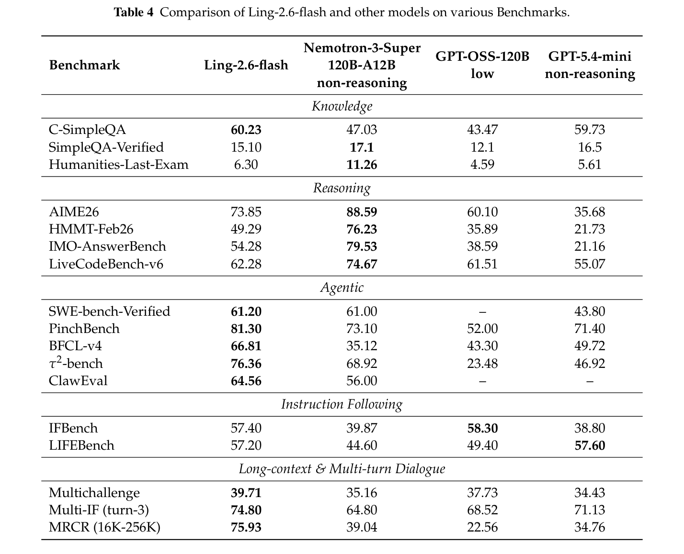
指令遵循与长上下文。模型遵循指令和处理长文本的能力出色。Ling-2.6-1T 在 IFBench 上取得领先的 57.62，在 MRCR（16K-256K）上取得突出的 80.37，展现卓越的长上下文检索和理解能力。Ling-2.6-flash 在这方面尤其突出，在所有列出的长上下文与对话基准上明显超过同类模型。它在 MRCR 上取得 75.93，超过最接近竞争者分数的两倍，也在 Multichallenge（39.71）和 Multi-IF（74.80）上领先，证实其处理长而复杂交互时出色的效率和效果。
Token 效率。我们对 Ling-2.6-1T 进行 Artificial Analysis Intelligence Index 评测，如图 1 上部所示。模型仅使用约 16M 输出 token 就获得 34 分，token 效率约为 Ling-2.0-1T 的 4 倍，与非推理设置下的 GPT-5.4 相当。这凸显后训练方案带来的显著 token 效率提升，使模型能以大幅减少的输出 token 实现高质量推理。
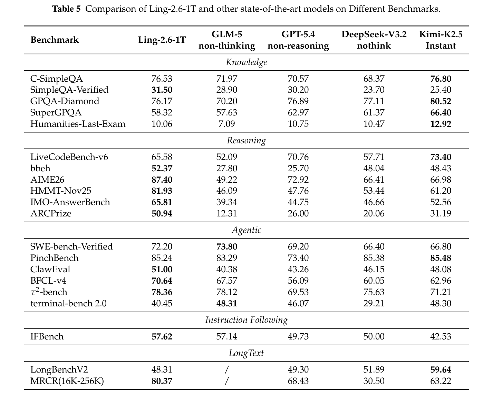
推理效率。除了基准质量，Ling-2.6-1T 主要面向最高能力水平，因此部署要求显著更高；Ling-2.6-flash 则明确为部署时的推理效率设计。得益于混合 attention 设计和高度稀疏 MoE 架构，Ling-2.6-flash 相比相近规模的先进模型，服务速度显著更快，prefill 和 decode 均可获得最高 4 倍加速。如图 9 所示，在 \(4\times H20\) 部署、batch 大小 32、4 个 TP rank、输出长度 64K 下，Ling-2.6-flash 的 decoding 吞吐量是 Nemotron-3-Super 的 1.3 倍、Qwen3.5-122B-A10B 的 2.4 倍、GLM-4.5-Air 的 4.3 倍。在实践中，这种效率特点使 Ling-2.6-flash 更适合延迟敏感、长输出和吞吐量受限的 agent 工作负载；在这些场景中，响应速度是模型效用的一部分，而非次要系统考量。
3.3.2 Ring-2.6 评测
本节在涵盖推理、OpenClaw、agent 编码、agent 搜索和函数调用的广泛基准上全面评测 Ring-2.6-1T。我们将其与包括开放权重和专有模型在内的领先前沿模型比较，以定位其能力，并识别优势和待改善领域。
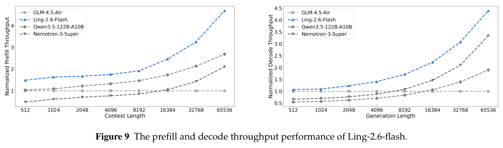
基准
为全面评估 Ring-2.6-1T，我们在广泛基准上开展评测，主要涵盖五个领域：推理、OpenClaw、agent 编码、agent 搜索和函数调用。
- 推理：AIME 20269（Avg@64）、LiveCodeBench-v6（Jain et al., 2025a）（2408-2505, Avg@4）、GPQA-Diamond（Rein et al., 2023b）（Avg@16）、ARC-AGI-2（Chollet et al., 2025）（Pass@2）、HMMT-\(Feb26^{10}\)（Avg@64）、IMO-AnswerBench（Luong et al., 2025）（Avg@8）。
- OpenClaw：PinchBench11（Avg@3）、ClawEval12（0424, Pass^3）。
- Agent 编码13：SWE-bench Verified（Jimenez et al., 2024）（Resolved）、SWE-bench Pro（Deng et al., 2025）（Resolved）。
- Agent 搜索：GAIA-2 Search（Mialon et al., 2023）（Pass@1，3 次运行）。
- 函数调用：τ2-bench（Barres et al., 2025）（Average、Retail、Airline、Telecom）。
我们在两种推理配置下评测 Ring-2.6-1T：Ring-2.6-1T（xhigh）采用更大的思考预算以最大化推理深度；Ring-2.6-1T（high）减少推理开销，以效率为优化目标。比较的领先模型包括 Kimi-K2.6-Thinking、DeepSeek-V4-\(Pro^{14}\)、ChatGPT-5.4（Singh et al., 2025）、Gemini-3.1-\(Pro^{15}\)、GLM-5.1-Thinking（Zhipu-AI, 2026）、Claude-Opus-4.7-Thinking16 和 Claude-Opus-4.6-Thinking。所有评测在受控实验条件下采用标准化配置。
结果
表 6 全面比较 Ring-2.6-1T 与领先前沿模型。下文详细分析其各方面表现。
推理。Ring-2.6-1T 在富有挑战性的基准中展现强大的推理能力。在 AIME 2026 上，Ring-2.6-1T（xhigh）达到 95.78%，在顶尖前沿模型中处于有竞争力的位置。在 LiveCodeBench-v6（2408–2505）上，其分数为 86.95%，在开放权重模型中位居第二，仅次于 Kimi-K2.6-Thinking（89.80%），并比 GLM-5.1-Thinking（82.49%）高出超过 4 个百分点。
（末句接续原文第 25 页。）
9 https://artofproblemsolving.com/wiki/index.php/AIME_Problems_and_Solutions
10 https://www.hmmt.org/
11 https://pinchbench.com/
12 ClawEval 是 OpenClaw agent 的评测套件。
13 SWE 基准报告的是使用 Claude Code 作为执行框架时的表现。
14 https://huggingface.co/deepseek-ai/DeepSeek-V4-Pro
15 https://deepmind.google/technologies/gemini/
16 https://www.anthropic.com/claude
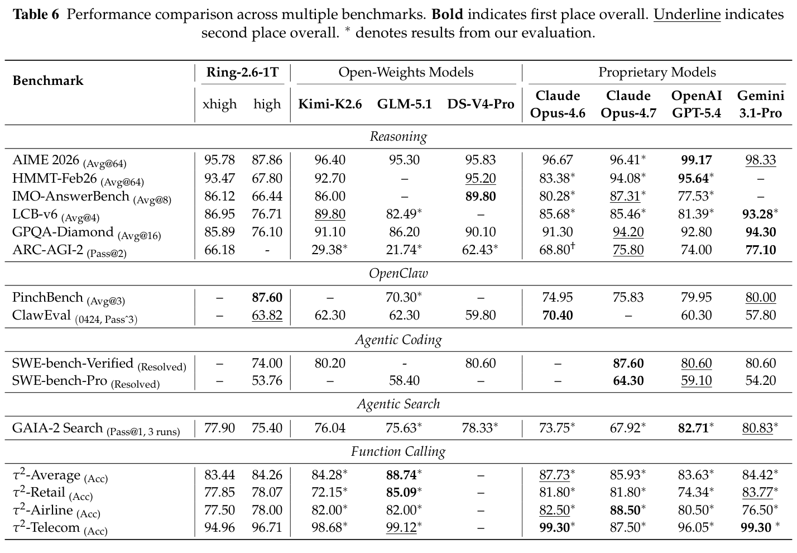
在 ARC-AGI-2 上，Ring-2.6-1T（xhigh）达到 66.18%，位列开放权重模型第一，展现强大的抽象推理和模式识别能力。这些结果凸显模型稳健的推理表现，由可扩展强化学习训练方案驱动。
OpenClaw。Ring-2.6-1T 在 OpenClaw 基准任务中表现出色。在 PinchBench 上，Ring-2.6-1T（high）取得所有评测模型中最高的 87.60%，大幅超过 Gemini-3.1-Pro（80.00%）和 ChatGPT-5.4（79.95%），差距超过 7 个百分点。在 ClawEval（0424, pass³）上，Ring-2.6-1T（high）达到 63.82%，位居开放权重模型第一，超过 Kimi-K2.6-Thinking（62.30%）和 GLM-5.1-Thinking（62.30%）。
Agent 编码。Ring-2.6-1T 在 agent 编码基准上展现良好能力。在 SWE-bench Verified 上，Ring-2.6-1T（high）达到 74.00%，缩小了与 Kimi-K2.6-Thinking（80.20%）和 DeepSeek-V4-Pro（80.60%）等领先开放权重模型的差距。在 SWE-bench Pro 上，其得分为 53.76%，与 GLM-5.1-Thinking（58.40%）有竞争力。这些结果体现了其完成需要多文件推理和迭代调试的复杂现实软件工程任务的扎实基础。
Agent 搜索。在 GAIA-2 Search 上，Ring-2.6-1T（xhigh）达到 77.90%，展现网页搜索场景中的强大多跳推理和信息检索能力。这一表现与 DeepSeek-V4-Pro（78.33%）处于有竞争力的水平，落后于领先的 ChatGPT-5.4（82.71%）和 Gemini-3.1-Pro（80.83%）。值得关注的是，模型超过 GLM-5.1-Thinking（75.63%）和 Claude-Opus-4.6-Thinking（73.75%）等多个强基线，表明搜索增强推理得到有效整合。
（搜索段落末两句接续原文第 26 页。）
（页首搜索段落已合并至第 25 页。）
函数调用。Ring-2.6-1T 在 τ2-bench 套件（Barres et al., 2025）中展现稳健的函数调用能力。high 版本取得 τ2-Average 84.26%，与 Gemini-3.1-Pro（84.42%）和 Kimi-K2.6-Thinking（84.28%）相当。在 τ2-Telecom 上，Ring-2.6-1T（high）取得 96.71%，展现领域专用工具使用的强大表现。这些结果证实模型在结构化 API 交互和多轮函数调用场景中的可靠性，这对现实 agent 应用至关重要。
4 基础设施
系统栈是能力与成本的首要决定因素。简而言之，主要挑战不仅是让各组件单独工作，而是在万亿参数规模和高度变化的工作负载下，保持吞吐量、数值稳定性与调度效率。因此，本节描述支撑 2.6 家族的基础设施协同设计，覆盖三个层面：长上下文预训练和后训练的训练效率、大规模异步 agent 优化的 RL 效率，以及服务的推理效率。
4.1 长上下文训练
2.6 家族的长上下文训练并非 Ling-2.0 系统栈的直接扩展。引入混合线性 attention，并将训练推向更长序列后，我们发现必须重新考虑分布式训练策略和内存管理策略，以保持大规模端到端效率。因此，基础设施工作聚焦三个相互关联的问题：Lightning Attention 的可扩展 CP、高度碎片化变长工作负载下的内核效率，以及长上下文 MoE 训练的吞吐量与稳定性平衡。
4.1.1 Lightning Attention 的 CP
线性 attention 通过 RNN 式递推，将复杂度从 O(N²) 降至 O(N)，成为长上下文训练的关键基础操作。然而，其沿序列维度的顺序依赖，阻止了为 Softmax Attention 设计的常规 CP 方案直接迁移：Ring Attention 依赖在线 softmax 校正，不适用于递推状态累积；DeepSpeed Ulysses 则要求 cp_size 整除 head_num，限制了极长上下文下的扩展性。
基于 AllGather 的 CP。我们引入面向线性 attention 的 AllGather CP 设计，以先局部递推、再全局校正为原则，如图 10 所示：
- GPU 内阶段：每个 rank 独立计算自身序列分片的局部隐藏状态 \(h^{(k)}\) 和局部输出 \(O^{(k)}\)，无需算法修改即可完整复用高度优化的 FLA 内核。
- GPU 间阶段：对形状为 [B, H, D, D] 的局部状态执行一次 AllGather；随后每个 rank 按递推关系折叠前序状态，并校正自身局部输出。由于 FLA 通过两个独立内核产生 \(h^{(k)}\) 和 \(O^{(k)}\)，AllGather 可与局部 \(O\) 计算重叠，有效隐藏 rank 间通信成本。
该设计没有 attention 头整除约束，随 cp_size 线性扩展，在超长上下文条件下具有严格优于 All2All 式替代方案的扩展性。
4.1.2 变长序列的内核融合
长上下文训练中，当 cp_size 较大时，变长输入往往包含大量短子序列。朴素实现会在此类工作负载下频繁启动内核，造成显著 CPU 端开销，并明显降低 GPU 利用率，反向传播中的影响尤其突出。我们通过解析地展开状态校正递推为向量化矩阵形式，并将每个子序列的输出校正合并到单个 Triton 融合内核中，缓解这一问题；两者共同在 256K 上下文长度下带来约 68% 的端到端加速。
（末句接续原文第 28 页。）
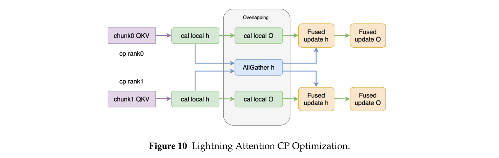
4.1.3 吞吐量与稳定性平衡
MoE 模型的长上下文训练导致 GPU 间计算负载和内存使用严重失衡，影响性能与稳定性。关键问题包括路由器负载均衡波动，以及块对角因果掩码带来的不均匀工作负载；这些问题随上下文长度增加而恶化。
我们的吞吐量导向策略协同设计并行方法（EP、PP、CP）和选择性激活重计算，以最大化内存使用、最小化开销。然而，接近 GPU 内存上限运行时，路由器突然失衡可能导致 OOM。为管理这一风险，我们按训练阶段采用不同内存策略：
- 预训练：激进使用 GPU 内存，以提高 FLOPs 利用率。
- 长上下文后训练：保守使用 GPU 内存，以吸收波动，优先保证稳定性。
我们还发现一个关键扩展问题：某些现有 MoE 内核实现假定 token 数可容纳在 32 位整数中。长上下文训练中的专家 token 数可能超过这一上限，造成溢出或崩溃。我们审查并修改关键路径，使用 64 位整数（int64）进行索引和计数，确保大规模下的稳健性。
总体而言，我们通过阶段专用内存策略和基础性修复，平衡高吞吐量与稳定性，实现超长上下文下可靠的分布式 MoE 训练。
4.2 强化学习基础设施：ASystem
Ling-2.6 和 Ring-2.6 在 ASystem 上构建 RL；该框架最初在此前的 Ring-2.0（Ling Team, 2025）中引入。通过可插拔的训练、推理和奖励后端，ASystem 支持各组件独立扩展和调试。通过分离控制流与数据流，它有效缓解传统 SingleController 架构中的单点数据流瓶颈。在 Ling-2.6 和 Ring-2.6 中，ASystem 面向三项基础设施要求：高效的长序列 rollout 调度、稳定的低精度训练与推理对齐，以及原生收集多轮 agent RL 轨迹。
通过 ARouter 进行全局 rollout 调度。如图 11 所示，ARouter 是 RL rollout 的全局请求路由器。它不以最小化单请求延迟为目标，而是最小化训练步完成时间，因为少量长 decoding 请求可能阻塞整批 rollout，让许多 GPU 闲置。
（末句接续原文第 29 页。）
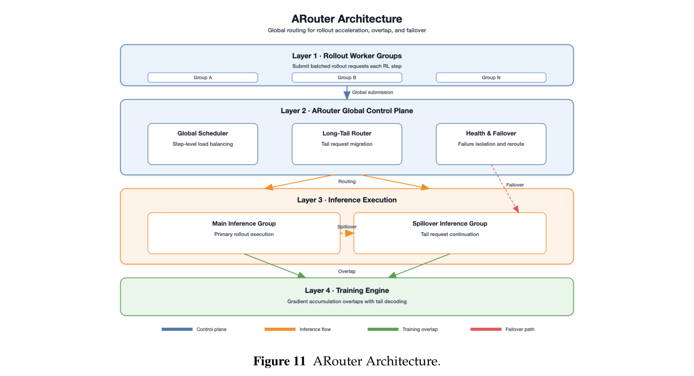
为降低尾延迟，ARouter 跟踪推理实例负载与生成进度，将后期长尾请求从拥塞实例迁移到空闲实例。它还支持基于溢出的训练与推理重叠：剩余长尾请求卸载到专用推理组，主推理组则释放计算资源，开始训练侧 gradient 累积。尾部结果在模型更新前合并，使训练计算隐藏在 rollout 中，在长序列场景下将端到端性能提高超过 80%。
ARouter 还提供推理实例故障转移。不健康实例从调度中移除，受影响请求重新路由至健康节点；请求级流式 checkpoint 保留增量生成状态。这避免了整个训练步重新执行，降低长时间 rollout 步骤的恢复成本。
集成 FP8 训练与推理。ASystem 集成 FP8 训练与推理，在保持 RL 稳定性的同时提升吞吐量。由于 Ling-2.6 从预训练到 SFT 都使用 FP8 训练，FP32 优化器主权重比反量化的 BF16 模型权重保留更多高精度信息。在 RL 初始化时加载这些主权重，可改善 BF16 和 FP8 持续训练的早期奖励增长。
为减少训练与推理不匹配，ASystem 在 Megatron 训练引擎和 SGLang 推理引擎中均以 FP32 计算 LM Head，使奖励提高约两点。对于其余层，ASystem 采用感知模块的 FP8 量化，而非统一应用 Blockwise FP8 Linear。Attention Linear 和 Shared Experts Linear 保持 BF16，Routed Experts Linear 使用 Blockwise FP8。这既保留了数值敏感的 attention 计算，又量化了占参数量超过 90% 的 MoE 组件。在 Max 1T 128K RL 设置下，该设计控制了对数概率漂移，在长期评测中达到 BF16 基线水平，并将端到端吞吐量提高 30%。
Agent RL 支持。ASystem 通过将 agent 执行与分布式推理和训练解耦，支持多轮 agent RL。Agent 通过 HTTP 调用标准 OpenAI Chat Completions API，代理层将请求路由至 SGLang、记录交互，并构建训练用轨迹树。每个提示可运行多个独立会话，通过会话级故障隔离，使单次 agent 运行失败不会阻塞整个 batch。
（最后三句接续原文第 30 页。）
为支持多轮 agent 交互中的训练信号组织，ASystem 提供 individual 模式：每轮仅对当前回答计算损失；concat 模式则以终局奖励训练完整轨迹。对于复杂 agent，它检测重试与探索分支，提取主链，并可选择在分支上训练或共享奖励，使学习聚焦关键决策。
4.2.1 异步 RL
Ring-2.6 进一步以异步 RL 执行扩展 ASystem，处理长尾推理 rollout 和受环境约束的 agent 工作负载。数学、编码、逻辑及 STEM 等推理任务产生的 CoT，尾部生成长度可能远高于平均值。编码、搜索和工具使用等 agent 任务又引入代码沙箱、终端会话、检索服务及工具／MCP 端点的额外延迟。同步锁步 RL 流程会让训练器等待最慢的 rollout。因此，ASystem 聚焦持续向训练器供给数据，同时约束异步执行引入的策略陈旧程度。
部分 rollout 流程。Ring-2.6 RL 并未完全解耦 rollout 和训练，而是采用类似 \(C3PO++\)（Ling Team, 2025）的部分 rollout 方式：每个优化步由 rollout 生成的全局 token 预算控制。Rollout 控制器通过重叠 batch 分发器，持续向推理引擎分发提示；前序轨迹仍在收集时就提交新工作，使推理池不在 batch 边界耗尽。轨迹到达时，控制器依据每轮预算 Φ 跟踪累计生成 token 数。完整轨迹经过 ASandbox 进行验证器或工具驱动的奖励计算；达到预算时仍在进行的轨迹暂停，连同 KV cache 指纹持久化到跨版本 rollout 缓冲区，并在后续迭代中由下个策略版本恢复。随后训练器在收集到的 batch 上执行一次优化步，触发推理引擎权重更新。以 token 数而非最慢轨迹限制每步，可避免完全同步 rollout 的长尾开销，同时保持 rollout 和训练之间的边界确定、易于保存 checkpoint。
由于轨迹现在可能由不 on-policy 版本生成的片段组成，我们通过专门的陈旧度管理器控制版本偏差。每个 rollout 片段标记生成时推理引擎的策略版本；管理器只允许在可配置的 max_staleness \(\times\) consumer_batch_size 上限内接纳新 rollout，并丢弃或停用与训练器版本差距超过该上限的片段。由此形成陈旧程度受限的运行方式，使 RL 算法可以将 rollout 视为近似 on-policy，而系统获得部分 rollout 执行的吞吐量。结合 ASystem 亚秒级权重广播，Ring-2.6 强化学习中的有效陈旧程度被限制在少数优化步以内；与同步基线相比，我们未观察到稳定性或最终奖励损失。
异步 agent rollout。部分 rollout 流程使我们能够在当前规模下以可处理的方式运行 agent RL。编码任务的轨迹在容器化仓库内运行，调用构建、测试和 shell 访问工具；搜索任务通过外部服务执行检索、浏览和推理；工具使用任务则与多轮客服模拟器交互，其状态在推理引擎外跟踪。在每种情况下，rollout 都是一系列交互（模型生成、环境步、模型生成……），每步延迟高度变化，由环境而非 GPU 主导。
（末两句接续原文第 31 页。）
系统栈的三个特点使这些工作负载高效。首先，推理引擎与环境独立扩展：数千个 ASandbox 副本处理不同环境，rollout 控制器将每次工具调用建模为可等待对象，确保 GPU 不因等待尚未完成的 HTTP／MCP 请求而停滞。其次，只要任何进行中的轨迹产生部分结果，重叠 batch 分发器就持续补充推理引擎；token 预算截止通过将异常长轨迹放入 rollout 缓冲区、留待下个策略版本处理，约束其成本。这些机制共同保证代码补丁或浏览会话的长尾不再让 GPU 闲置。第三，统一验证器接口涵盖各种推理任务、编码执行框架、工具使用模拟器和浏览器，均通过 ASandbox 下的单一 HTTP／MCP 契约呈现，使训练器可在一次运行中结合推理与 agent 数据集，无需任务专用调度。
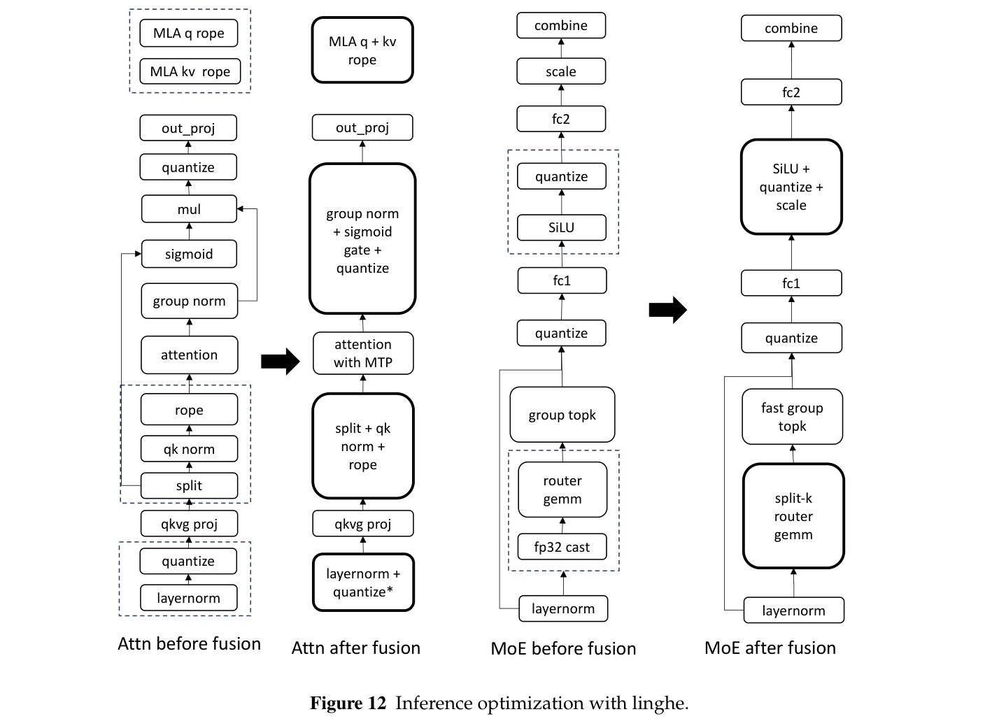
4.3 算子融合
Ling-2.6 预训练期间，我们通过广泛的算子融合显著提升训练效率。在推理侧，我们进一步将这些融合内核适配到真实部署场景，使其融合粒度和数值行为尽可能与训练阶段一致。
（末句接续原文第 32 页。）
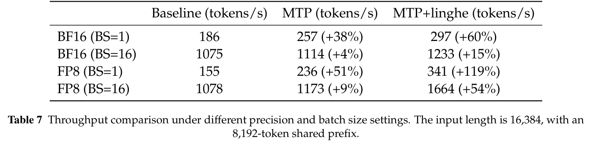
这一设计不仅提升推理效率，还减少 RL rollout 期间的训练与推理差异。这些推理内核已通过 linghe17 开源。为支持不同精度设置，我们在整个推理阶段进行了系统优化。
BF16 推理：我们对 QK Norm + RoPE、Group \(RMSNorm + Sigmoid\) Gate 等关键算子实现融合。同时，MoE Router GEMM 和 LM Head GEMM 均采用 BF16 输入 + FP32 输出的计算路径，并进一步优化 MLA RoPE 和 Top-K 实现。
FP8 推理：我们进一步将 RMS Norm、SwiGLU 与量化融合，并为 mini-batch 场景引入 Split-K Blockwise FP8 GEMM，以获得更多吞吐量收益。
这些优化共同构成涵盖内核融合、前缀缓存机制和多 token 生成的系统级协同设计。结果不仅是更高的整体系统吞吐量，也包括更高的单用户 TPS、更短等待时间，以及真实使用中更稳定、流畅的交互体验。
5 结论、局限与未来方向
本报告介绍了 Ling-2.6 和 Ring-2.6，这是面向万亿参数规模下实用 agent 智能的模型家族。该家族表明，这一规模上的进展不应只来自模型大小，而更应来自架构、后训练、系统和 agent 训练环境之间更紧密的协同设计。在这一框架下，本报告推进三个目标：高效长上下文处理、更高的每输出 token 能力，以及更可靠的基于环境的 agent 行为。Ling-2.6 被开发为即时响应模型系列，针对快速响应、强 token 效率，以及部署约束下的广泛实用性进行优化；Ring-2.6 则被开发为深入思考模型系列，面向复杂推理和长程 agent 任务。因此，2.6 家族不应只被理解为一组新模型，而应被视为通向高效、开放且越来越注重实践的 agent 系统的具体路径。
尽管取得上述进展，一些重要瓶颈仍未解决。Ling-2.6-flash 获得了显著吞吐量与 token 节约收益，但更紧的思考预算必然限制高复杂度设置中的推理深度、指令组合能力和工具使用可靠性。当前 token 效率目标也不完整：它能有效压缩程序性推理，却不能始终清晰地区分知识密集型输出中的低价值重复和必要事实展开。此外，长程 agent 稳健性仍弱于短程能力：模型能做出强有力的局部决策，但在延长工作流、变化的工具状态和异构执行环境下，可靠性会下降。最后，对齐与评测的稳定性仍未达预期：在严格约束的提示下，模型可能在语言间漂移；现有公开基准也仍未充分衡量持续完成任务的能力、恢复行为、成本感知规划和部署时稳健性。
Ling 和 Ring 下一阶段应继续这一协同设计视角，同时将家族推向更高能力上限。简而言之，进一步收益将依赖更深入的架构与系统效率协同设计，包括模型扩展、先进架构设计、低精度训练与推理、KV cache 管理，以及 Muon（Liu et al., 2025）等下一代优化方案。同等重要的转变是从纯文本系统走向原生多模态 agent。实用 agent 必须处理视觉界面、文档、代码产物和混合模态环境，因此未来 Ling 和 Ring 模型应将当前架构与 agent RL 栈扩展至原生多模态，而非依赖松散耦合的外部感知模块。评测也必须朝同一方向演进。这些方向共同定义了下一阶段 agent 系统的一份紧凑研究议程：更大、更有能力的模型、更紧密的全栈效率协同设计，以及更贴近部署的多模态 agent。
6 贡献者
贡献者按名字的字母顺序排列。
贡献者（续）
† 表示通信作者。
参考文献
DeepSeek-V2 的作者名单跨第 36–37 页，按原页接续保留。
Joshua Ainslie, James Lee-Thorp, Michiel De Jong, Yury Zemlyanskiy, Federico Lebrón, and Sumit Sanghai. GQA：从多头 checkpoint 训练广义多查询 Transformer 模型. arXiv 预印本 arXiv:2305.13245, 2023.
Chenxin An, Shansan Gong, Ming Zhong, Mukai Li, Jun Zhang, Lingpeng Kong, and Xipeng Qiu. L-eval：建立长上下文语言模型的标准化评测, 2023.
Anthropic. 介绍 Claude Opus 4.7. https://www.anthropic.com/news/claude-opus-4-7, 2026.
Yushi Bai, Shangqing Tu, Jiajie Zhang, Hao Peng, Xiaozhi Wang, Xin Lv, Shulin Cao, Jiazheng Xu, Lei Hou, Yuxiao Dong, Jie Tang, and Juanzi Li. LongBench v2：在真实长上下文多任务上迈向更深入的理解与推理. In Wanxiang Che, Joyce Nabende, Ekaterina Shutova, and Mohammad Taher Pilehvar, 编， Proceedings of the 63rd Annual Meeting of the Association for Computational Linguistics (Volume 1: Long Papers), 页码 3639–3664, Vienna, Austria, July 2025. Association for Computational Linguistics. ISBN 979-8-89176-251-0. doi: 10.18653/v1/2025.acl-long.183. https://aclanthology.org/2025.acl-long.183/.
Mislav Balunovic´, Jasper Dekoninck, Ivo Petrov, Nikola Jovanovic´, and Martin Vechev. MathArena：在无污染数学竞赛上评测 LLM, 2 月 2025. https://matharena.ai/.
Lucas Bandarkar, Davis Liang, Benjamin Muller, Mikel Artetxe, Satya Narayan Shukla, Donald Husa, Naman Goyal, Abhinandan Krishnan, Luke Zettlemoyer, and Madian Khabsa. Belebele 基准：覆盖 122 种语言变体的平行阅读理解数据集. In Lun-Wei Ku, Andre Martins, and Vivek Srikumar, 编， Proceedings of the 62nd Annual Meeting of the Association for Computational Linguistics (Volume 1: Long Papers), 页码 749–775, Bangkok, Thailand, August 2024. Association for Computational Linguistics. doi: 10.18653/v1/2024.acl-long.44. https://aclanthology.org/2024.acl-long.44/.
Victor Barres, Honghua Dong, Soham Ray, Xujie Si, and Karthik Narasimhan. τ2-bench：在双重控制环境中评测对话 agent. arXiv 预印本 arXiv:2506.07982, 2025.
Mo Bavarian, Heewoo Jun, Nikolas A. Tezak, John Schulman, Christine McLeavey, Jerry Tworek, and Mark Chen. 高效训练语言模型进行中间填充. ArXiv, abs/2207.14255, 2022. https://api.semanticscholar.org/CorpusID:251135268.
François Chollet, Mike Knoop, Gregory Kamradt, and Bryan Landers. ARC Prize 2024：技术报告. arXiv 预印本 arXiv:2412.04604, 2024.
François Chollet, Mike Knoop, Gregory Kamradt, Bryan Landers, and Henry Pinkard. ARC-AGI-2：前沿 AI 推理系统的新挑战. CoRR, abs/2505.11831, 2025.
Karl Cobbe, Vineet Kosaraju, Mohammad Bavarian, Mark Chen, Heewoo Jun, Lukasz Kaiser, Matthias Plappert, Jerry Tworek, Jacob Hilton, Reiichiro Nakano, Christopher Hesse, and John Schulman. 训练验证器解决数学应用题. CoRR, abs/2110.14168, 2021. https://arxiv.org/abs/2110.14168.
Viet Dac Lai, Chien Van Nguyen, Nghia Trung Ngo, Thuat Nguyen, Franck Dernoncourt, Ryan A Rossi, and Thien Huu Nguyen. Okapi：通过 RLHF 进行多语言指令微调的 LLM. arXiv e-prints, 页码 arXiv–2307, 2023.
DeepSeek-AI. DeepSeek-V3 技术报告, 2024. https://arxiv.org/abs/2412.19437.
DeepSeek-AI. DeepSeek V4：迈向高效的百万 token 上下文智能. https://huggingface.co/deepseek-ai/DeepSeek-V4-Pro/blob/main/DeepSeek_V4.pdf, 5 月 2026.
DeepSeek-AI, Aixin Liu, Bei Feng, Bin Wang, Bingxuan Wang, Bo Liu, Chenggang Zhao, Chengqi Dengr, Chong Ruan, Damai Dai, Daya Guo, Dejian Yang, Deli Chen, Dongjie Ji, Erhang Li, Fangyun Lin, Fuli Luo, Guangbo Hao, Guanting Chen, Guowei Li, H. Zhang, Hanwei Xu, Hao Yang, Haowei Zhang, Honghui Ding, Huajian Xin, Huazuo Gao, Hui Li, Hui Qu, J. L. Cai, Jian Liang, Jianzhong Guo, Jiaqi Ni, Jiashi Li, Jin Chen, Jingyang Yuan, Junjie Qiu, Junxiao Song, Kai Dong, Kaige Gao, Kang Guan, Lean Wang, Lecong Zhang, Lei Xu, Leyi Xia, Liang Zhao, Liyue Zhang, Meng Li, Miaojun Wang, Mingchuan Zhang, Minghua Zhang, Minghui Tang, Mingming Li, Ning Tian, Panpan Huang, Peiyi Wang, Peng Zhang, Qihao Zhu, Qinyu Chen, Qiushi Du, R. J. Chen, R. L. Jin, Ruiqi Ge, Ruizhe Pan, Runxin Xu, Ruyi Chen, S. S. Li, Shanghao Lu, Shangyan Zhou, Shanhuang Chen, Shaoqing Wu, Shengfeng Ye, Shirong Ma, Shiyu Wang, Shuang Zhou, Shuiping Yu, Shunfeng Zhou, Size Zheng, T. Wang, Tian Pei, Tian Yuan, Tianyu Sun, W. L. Xiao, Wangding Zeng, Wei An, Wen Liu, Wenfeng Liang, Wenjun Gao, Wentao Zhang, X. Q. Li, Xiangyue Jin, Xianzu Wang, Xiao Bi, Xiaodong Liu, Xiaohan Wang, Xiaojin Shen, Xiaokang Chen, Xiaosha Chen, Xiaotao Nie, Xiaowen Sun, Xiaoxiang Wang, Xin Liu, Xin Xie, Xingkai Yu, Xinnan Song, Xinyi Zhou, Xinyu Yang, Xuan Lu, Xuecheng Su, Y. Wu, Y. K. Li, Y. X. Wei, Y. X. Zhu, Yanhong Xu, Yanping Huang, Yao Li, Yao Zhao, Yaofeng Sun, Yaohui Li, Yaohui Wang,
参考文献（续）
Yi Zheng, Yichao Zhang, Yiliang Xiong, Yilong Zhao, Ying He, Ying Tang, Yishi Piao, Yixin Dong, Yixuan Tan, Yiyuan Liu, Yongji Wang, Yongqiang Guo, Yuchen Zhu, Yuduan Wang, Yuheng Zou, Yukun Zha, Yunxian Ma, Yuting Yan, Yuxiang You, Yuxuan Liu, Z. Z. Ren, Zehui Ren, Zhangli Sha, Zhe Fu, Zhen Huang, Zhen Zhang, Zhenda Xie, Zhewen Hao, Zhihong Shao, Zhiniu Wen, Zhipeng Xu, Zhongyu Zhang, Zhuoshu Li, Zihan Wang, Zihui Gu, Zilin Li, and Ziwei Xie. DeepSeek-V2：强大、经济且高效的 MoE 语言模型, 6 月 2024.
Xiang Deng, Jeff Da, Edwin Pan, Yan He, Charles Ide, Kanak Garg, Niklas Lauffer, Andrew Park, Nitin Pasari, Chetan Rane, Karmini Sampath, 5 月a Krishnan, Srivatsa Kundurthy, Sean M. Hendryx, Zifan Wang, Chen Bo Calvin Zhang, Noah Jacobson, Bing Liu, and Brad Kenstler. SWE-bench Pro：AI agent 能否解决长程软件工程任务？ arXiv 预印本 arXiv:2509.16941, 2025.
Kaustubh Deshpande, Ved Sirdeshmukh, Johannes Baptist Mols, Lifeng Jin, Ed-Yeremai Hernandez-Cardona, Dean Lee, Jeremy Kritz, Willow E. Primack, Summer Yue, and Chen Xing. MultiChallenge：挑战前沿 LLM 的真实多轮对话评测基准. In Wanxiang Che, Joyce Nabende, Ekaterina Shutova, and Mohammad Taher Pilehvar, 编， Findings of the Association for Computational Linguistics: ACL 2025, 页码 18632– 18702, Vienna, Austria, July 2025. Association for Computational Linguistics. ISBN 979-8-89176-256-5. doi: 10.18653/ v1/2025.findings-acl.958. https://aclanthology.org/2025.findings-acl.958/.
Runnan Fang, Shihao Cai, Baixuan Li, Jialong Wu, Guangyu Li, Wenbiao Yin, Xinyu Wang, Xiaobin Wang, Liangcai Su, Zhen Zhang, 等 通过环境扩展迈向通用 agent 智能. arXiv 预印本 arXiv:2509.13311, 2025.
Romain Froger, Pierre Andrews, Matteo Bettini, Amar Budhiraja, Ricardo Silveira Cabral, Virginie Do, Emilien Garreau, Jean-Baptiste Gaya, Hugo Laurençon, Maxime Lecanu, 等 ARE：扩展 agent 环境与评测. arXiv 预印本 arXiv:2509.17158, 2025.
Bofei Gao, Feifan Song, Zhe Yang, Zefan Cai, Yibo Miao, Qingxiu Dong, Lei Li, Chenghao Ma, Liang Chen, Runxin Xu, Zhengyang Tang, Benyou Wang, Daoguang Zan, Shanghaoran Quan, Ge Zhang, Lei Sha, Yichang Zhang, Xuancheng Ren, Tianyu Liu, and Baobao Chang. Omni-MATH：面向 LLM 的通用奥林匹克级数学基准. In The Thirteenth International Conference on Learning Representations, ICLR 2025, Singapore, April 24-28, 2025. OpenReview.net, 2025. https://openreview.net/forum?id=yaqPf0KAlN.
Fabian Gloeckle, Badr Youbi Idrissi, Baptiste Rozière, David Lopez-Paz, and Gabriel Synnaeve. 通过 MTP 构建更好、更快的 LLM. arXiv 预印本 arXiv:2404.19737, 2024.
Google. Gemini 3.1 Pro — Google DeepMind. https://deepmind.google/models/gemini/pro/, 2026.
Jia Guo, Yan Sun, Zhenyu Huang, Zihao Wang, Zujie Wen, Zhiqiang Zhang, Jun Zhou, and Stanley Kok. KPop：通过自适应掩码区域缓解强化学习中的训练与推理不匹配, 5 月 2026. https://ringtech.notion.site/kpop.
Chaoqun He, Renjie Luo, Yuzhuo Bai, Shengding Hu, Zhen Leng Thai, Junhao Shen, Jinyi Hu, Xu Han, Yujie Huang, Yuxiang Zhang, Jie Liu, Lei Qi, Zhiyuan Liu, and Maosong Sun. OlympiadBench：以奥林匹克级双语多模态科学问题推动 AGI 的挑战性基准. In Lun-Wei Ku, Andre Martins, and Vivek Srikumar, 编， Proceedings of the 62nd Annual Meeting of the Association for Computational Linguistics (Volume 1: Long Papers), ACL 2024, Bangkok, Thailand, August 11-16, 2024, 页码 3828–3850. Association for Computational Linguistics, 2024a. doi: 10.18653/V1/2024.ACL-LONG.211. https://doi.org/10.18653/v1/2024.acl-long.211.
Wei He, Yueqing Sun, Hongyan Hao, Xueyuan Hao, Zhikang Xia, Qi Gu, Chengcheng Han, Dengchang Zhao, Hui Su, Kefeng Zhang, 等 VitaBench：通过现实应用中的多样化交互任务评测 LLM agent. arXiv 预印本 arXiv:2509.26490, 2025a.
Yancheng He, Shilong Li, Jiaheng Liu, Yingshui Tan, Weixun Wang, Hui Huang, Xingyuan Bu, Hangyu Guo, Chengwei Hu, Boren Zheng, Zhuoran Lin, Dekai Sun, Zhicheng Zheng, Wenbo Su, and Bo Zheng. Chinese SimpleQA：LLM 的中文事实性评测. In Wanxiang Che, Joyce Nabende, Ekaterina Shutova, and Mohammad Taher Pilehvar, 编， Proceedings of the 63rd Annual Meeting of the Association for Computational Linguistics (Volume 1: Long Papers), ACL 2025, Vienna, Austria, July 27 - August 1, 2025, 页码 19182–19208. Association for Computational Linguistics, 2025b. https://aclanthology.org/2025.acl-long.941/.
Yun He, Di Jin, Chaoqi Wang, Chloe Bi, Karishma Mandyam, Hejia Zhang, Chen Zhu, Ning Li, Tengyu Xu, Hongjiang Lv, 等 Multi-IF：评测 LLM 的多轮与多语言指令遵循. arXiv 预印本 arXiv:2410.15553, 2024b.
Dan Hendrycks, Collin Burns, Steven Basart, Andy Zou, Mantas Mazeika, Dawn Song, and Jacob Steinhardt. 衡量大规模多任务语言理解. In 9th International Conference on Learning Representations, ICLR 2021, Virtual Event, Austria, 5 月 3-7, 2021. OpenReview.net, 2021. https://openreview.net/forum?id=d7KBjmI3GmQ.
参考文献（续）
Jack Hong, Shilin Yan, Jiayin Cai, Xiaolong Jiang, Yao Hu, and Weidi Xie. WorldSense：评测多模态 LLM 的现实世界全模态理解. CoRR, abs/2502.04326, 2025. doi: 10.48550/ARXIV.2502.04326. https://doi.org/10.48550/arXiv.2502.04326.
Yu Huang, Zihua Zhao, Zhaoxin Huan, Wanli Gu, Feng Hong, Xinmu Ge, Lin Yuan, Weichang Wu, Qiang Hu, Xiaolu Zhang, Jun Zhou, and Jiangchao Yao. 聚焦奖励：基于评分准则奖励下的均衡强化学习, 2026. https://arxiv.org/abs/2605.26579.
Naman Jain, King Han, Alex Gu, Wen-Ding Li, Fanjia Yan, Tianjun Zhang, Sida Wang, Armando Solar-Lezama, Koushik Sen, and Ion Stoica. LiveCodeBench：代码 LLM 的全面、无污染评测. In The Thirteenth International Conference on Learning Representations, ICLR 2025, Singapore, 2025a.
Naman Jain, King Han, Alex Gu, Wen-Ding Li, Fanjia Yan, Tianjun Zhang, Sida Wang, Armando Solar-Lezama, Koushik Sen, and Ion Stoica. LiveCodeBench：代码 LLM 的全面、无污染评测. In The Thirteenth International Conference on Learning Representations, ICLR 2025, Singapore, April 24-28, 2025. OpenReview.net, 2025b. https://openreview.net/forum?id=chfJJYC3iL.
Carlos E Jimenez, John Yang, Alexander Wettig, Shunyu Yao, Kexin Pei, Ofir Press, and Karthik R Narasimhan. SWE-bench：语言模型能否解决真实 GitHub issue？ In The Twelfth International Conference on Learning Representations, 2024. https://openreview.net/forum?id=VTF8yNQM66.
Mandar Joshi, Eunsol Choi, Daniel S. Weld, and Luke Zettlemoyer. TriviaQA：面向阅读理解的大规模远程监督挑战数据集. In Regina Barzilay and Min-Yen Kan, 编， Proceedings of the 55th Annual Meeting of the Association for Computational Linguistics, ACL 2017, Vancouver, Canada, July 30 - August 4, Volume 1: Long Papers, 页码 1601–1611. Association for Computational Linguistics, 2017. doi: 10.18653/V1/P17-1147. https://doi.org/10.18653/v1/P17-1147.
Armand Joulin, Edouard Grave, Piotr Bojanowski, and Tomas Mikolov. 高效文本分类的实用技巧, 2016. https://arxiv.org/abs/1607.01759.
Mehran Kazemi, Bahare Fatemi, Hritik Bansal, John Palowitch, Chrysovalantis Anastasiou, Sanket Vaibhav Mehta, Lalit K Jain, Virginia Aglietti, Disha Jindal, Peter Chen, 等 BIG-Bench 超高难度版. arXiv 预印本 arXiv:2502.19187, 2025.
Yaniv Leviathan, Matan Kalman, and Yossi Matias. 通过 speculative decoding 实现 Transformer 快速推理. In International Conference on Machine Learning, 页码 19274–19286. PMLR, 2023.
Jinyang Li, Binyuan Hui, Ge Qu, Jiaxi Yang, Binhua Li, Bowen Li, Bailin Wang, Bowen Qin, Ruiying Geng, Nan Huo, Xuanhe Zhou, Chenhao Ma, Guoliang Li, Kevin Chen-Chuan Chang, Fei Huang, Reynold Cheng, and Yongbin Li. LLM 是否已能充当数据库接口？面向大规模数据库文本到 SQL 的大型基准. In Alice Oh, Tristan Naumann, Amir Globerson, Kate Saenko, Moritz Hardt, and Sergey Levine, 编， Advances in Neural Information Processing Systems 36: Annual Conference on Neural Information Processing Systems 2023, NeurIPS 2023, New Orleans, LA, USA, December 10 - 16, 2023, 2023. http://papers.nips.cc/paper_files/paper/2023/hash/83fc8fab1710363050bbd1d4b8cc0021-Abstract-Datasets_and_Benchmarks.html.
Junlong Li, Daya Guo, Dejian Yang, Runxin Xu, Yu Wu, and Junxian He. CodeIO：通过代码输入输出预测凝练推理模式. In Forty-second International Conference on Machine Learning, 2025. https://openreview.net/forum?id=feIaF6vYFl.
Minpeng Liao, Wei Luo, Chengxi Li, Jing Wu, and Kai Fan. MARiO：利用代码解释器输出进行数学推理——可复现的流程, 2024. https://arxiv.org/abs/2401.08190.
Bill Yuchen Lin, Ronan Le Bras, Kyle Richardson, Ashish Sabharwal, Radha Poovendran, Peter Clark, and Yejin Choi. ZebraLogic：LLM 逻辑推理的扩展极限. In Forty-second International Conference on Machine Learning, 2025. https://openreview.net/forum?id=sTAJ9QyA6l.
Ling Team. 每一步都在进化：为万亿规模思考模型扩展强化学习. arXiv 预印本 arXiv:2510.18855, 2025. https://arxiv.org/abs/2510.18855.
Hongwei Liu, Zilong Zheng, Yuxuan Qiao, Haodong Duan, Zhiwei Fei, Fengzhe Zhou, Wenwei Zhang, Songyang Zhang, Dahua Lin, and Kai Chen. MathBench：通过分层数学基准评测 LLM 的理论与应用熟练程度. In Lun-Wei Ku, Andre Martins, and Vivek Srikumar, 编， Findings of the Association for Computational Linguistics, ACL 2024, Bangkok, Thailand and virtual meeting, August 11-16, 2024, 页码 6884–6915. Association for Computational Linguistics, 2024. doi: 10.18653/V1/2024.FINDINGS-ACL.411. https://doi.org/10.18653/v1/2024.findings-acl.411.
参考文献（续）
Jiawei Liu, Chunqiu Steven Xia, Yuyao Wang, and Lingming Zhang. ChatGPT 生成的代码真的正确吗？对 LLM 代码生成的严格评测. In Thirty-seventh Conference on Neural Information Processing Systems, 2023a. https://openreview.net/forum?id=1qvx610Cu7.
Jiawei Liu, Chunqiu Steven Xia, Yuyao Wang, and Lingming Zhang. ChatGPT 生成的代码真的正确吗？对 LLM 代码生成的严格评测. In Alice Oh, Tristan Naumann, Amir Globerson, Kate Saenko, Moritz Hardt, and Sergey Levine, 编， Advances in Neural Information Processing Systems 36: Annual Conference on Neural Information Processing Systems 2023, NeurIPS 2023, New Orleans, LA, USA, December 10 - 16, 2023, 2023b. http://papers.nips.cc/paper_files/paper/2023/hash/43e9d647ccd3e4b7b5baab53f0368686-Abstract-Conference.html.
Jingyuan Liu, Jianlin Su, Xingcheng Yao, Zhejun Jiang, Guokun Lai, Yulun Du, Yidao Qin, Weixin Xu, Enzhe Lu, Junjie Yan, 等 Muon 可扩展用于 LLM 训练. arXiv 预印本 arXiv:2502.16982, 2025.
Thang Luong, Dawsen Hwang, Hoang H. Nguyen, Golnaz Ghiasi, Yuri Chervonyi, Insuk Seo, Junsu Kim, Garrett Bingham, Jonathan Lee, Swaroop Mishra, Alex Zhai, Clara Huiyi Hu, Henryk Michalewski, Jimin Kim, Jeonghyun Ahn, Junhwi Bae, Xingyou Song, Trieu H. Trinh, Quoc V. Le, and 6 月hyuk Jung. 迈向稳健的数学推理. In Proceedings of the 2025 Conference on Empirical Methods in Natural Language Processing, 2025. https://aclanthology.org/2025.emnlp-main.1794/.
Kaijing Ma, Xeron Du, Yunran Wang, Haoran Zhang, Zhoufutu Wen, Xingwei Qu, Jian Yang, Jiaheng Liu, Minghao Liu, Xiang Yue, Wenhao Huang, and Ge Zhang. KOR-Bench：在与知识正交的推理任务上评测语言模型. In The Thirteenth International Conference on Learning Representations, ICLR 2025, Singapore, April 24-28, 2025. OpenReview.net, 2025. https://openreview.net/forum?id=SVRRQ8goQo.
Fanxu Meng, Zengwei Yao, and Muhan Zhang. TransMLA：MLA 就是你所需要的全部. CoRR, abs/2502.07864, 2025. doi: 10.48550/ARXIV.2502.07864.
Mike A Merrill, Alexander G Shaw, Nicholas Carlini, Boxuan Li, Harsh Raj, Ivan Bercovich, Lin Shi, Jeong Yeon Shin, Thomas Walshe, E Kelly Buchanan, 等 Terminal-Bench：在命令行界面的困难现实任务中评测 agent. arXiv 预印本 arXiv:2601.11868, 2026.
Bettina Messmer, Vinko Sabolcˇec, and Martin Jaggi. 通过基于模型的数据选择增强多语言 LLM 预训练. arXiv, 2025. https://arxiv.org/abs/2502.10361.
Grégoire Mialon, Clémentine Fourrier, Craig Swift, Thomas Wolf, Yann LeCun, and Thomas Scialom. GAIA：通用 AI 助手的基准. arXiv 预印本 arXiv:2311.12983, 2023.
Moonshot-AI. Kimi K2.6 技术博客：推进开源编码. https://www.kimi.com/blog/kimi-k2-6, 2026.
OpenAI. 多语言大规模多任务语言理解, 2024. https://huggingface.co/datasets/openai/MMMLU.
OpenAI. 介绍 GPT-5.5. https://openai.com/index/introducing-gpt-5-5/, 5 月 2026.
Guilherme Penedo, Hynek Kydlícˇek, Vinko Sabolcˇec, Bettina Messmer, Negar Foroutan, Amir Hossein Kargaran, Colin Raffel, Martin Jaggi, Leandro Von Werra, and Thomas Wolf. FineWeb2：一套流程扩展所有语言——将预训练数据处理适配到每一种语言, 2025. https://arxiv.org/abs/2506.20920.
Long Phan, Alice Gatti, Ziwen Han, Nathaniel Li, Josephina Hu, Hugh Zhang, Chen Bo Calvin Zhang, Mohamed Shaaban, John Ling, Sean Shi, 等 人类最后的考试. arXiv 预印本 arXiv:2501.14249, 2025.
Valentina Pyatkin, Saumya Malik, Victoria Graf, Hamish Ivison, Shengyi Huang, Pradeep Dasigi, Nathan Lambert, and Hannaneh Hajishirzi. 泛化可验证的指令遵循, 2025.
Cheng Qian, Emre Can Acikgoz, Qi He, Hongru Wang, Xiusi Chen, Dilek Hakkani-Tur, Gokhan Tur, and Heng Ji. ToolRL：奖励就是工具学习所需要的全部. Advances in Neural Information Processing Systems, 38:105523–105553, 2026.
Zhen Qin, Dong Li, Weigao Sun, Weixuan Sun, Xuyang Shen, Xiaodong Han, Yunshen Wei, Baohong Lv, Xiao Luo, Yu Qiao, and Yiran Zhong. TransNormerLLM：通过改进 TransNormer 构建更快、更好的 LLM, 1 月 2024.
Qwen. Qwen3.5：迈向原生多模态 agent. https://qwenlm.github.io/blog/qwen3.5/, 2 月 2026.
Pranav Rajpurkar, Robin Jia, and Percy Liang. 知道自己不知道什么：SQuAD 中不可回答的问题. In Iryna Gurevych and Yusuke Miyao, 编， Proceedings of the 56th Annual Meeting of the Association for Computational Linguistics, ACL 2018, Melbourne, Australia, July 15-20, 2018, Volume 2: Short Papers, 页码 784–789. Association for Computational Linguistics, 2018. doi: 10.18653/V1/P18-2124. https://aclanthology.org/P18-2124/.
参考文献（续）
David Rein, Betty Li Hou, Asa Cooper Stickland, Jackson Petty, Richard Yuanzhe Pang, Julien Dirani, Julian Michael, and Samuel R. Bowman. GPQA：研究生级、无法靠 Google 搜索轻易解答的问答基准. CoRR, abs/2311.12022, 2023a. doi: 10.48550/ARXIV.2311.12022. https://doi.org/10.48550/arXiv.2311.12022.
David Rein, Betty Li Hou, Asa Cooper Stickland, Jackson Petty, Richard Yuanzhe Pang, Julien Dirani, Julian Michael, and Samuel R. Bowman. GPQA：研究生级、无法靠 Google 搜索轻易解答的问答基准. arXiv 预印本 arXiv:2311.12022, 2023b.
Aaditya Singh 等 OpenAI GPT-5 系统卡. arXiv 预印本 arXiv:2601.03267, 2025.
Jianlin Su, Murtadha Ahmed, Yu Lu, Shengfeng Pan, Wen Bo, and Yunfeng Liu. RoFormer：通过 RoPE 增强的 Transformer. Neurocomputing, 568:127063, 2024.
Mirac Suzgun, Nathan Scales, Nathanael Schärli, Sebastian Gehrmann, Yi Tay, Hyung Won Chung, Aakanksha Chowdhery, Quoc V. Le, Ed H. Chi, Denny Zhou, and Jason Wei. 有挑战性的 BIG-Bench 任务及 CoT 能否解决它们. In Anna Rogers, Jordan L. Boyd-Graber, and Naoaki Okazaki, 编， Findings of the Association for Computational Linguistics: ACL 2023, Toronto, Canada, July 9-14, 2023, 页码 13003–13051. Association for Computational Linguistics, 2023. doi: 10.18653/V1/2023.FINDINGS-ACL.824. https://doi.org/10.18653/v1/2023.findings-acl.824.
Alon Talmor, Jonathan Herzig, Nicholas Lourie, and Jonathan Berant. CommonsenseQA：面向常识知识的问答挑战. arXiv 预印本 arXiv:1811.00937, 2018.
Ling Team, Bin Han, Caizhi Tang, Chen Liang, Donghao Zhang, Fan Yuan, Feng Zhu, Jie Gao, Jingyu Hu, Longfei Li, Meng Li, Mingyang Zhang, Peijie Jiang, Peng Jiao, Qian Zhao, Qingyuan Yang, Wenbo Shen, Xinxing Yang, Yalin Zhang, Yankun Ren, Yao Zhao, Yibo Cao, Yixuan Sun, Yue Zhang, Yuchen Fang, Zibin Lin, Zixuan Cheng, and Jun Zhou. 每一处 attention 都重要：面向长上下文推理的高效混合架构, 2025a. https://arxiv.org/abs/2510.19338.
Ling Team, Ang Li, Ben Liu, Binbin Hu, Bing Li, Bingwei Zeng, Borui Ye, Caizhi Tang, Changxin Tian, and Chao Huang. 增强每一次激活：将通用推理模型扩展为万亿参数开放语言基础模型. arXiv 预印本 arXiv:2510.22115, 2025b.
M.-A-P. Team, Xinrun Du, Yifan Yao, Kaijing Ma, Bingli Wang, Tianyu Zheng, Kang Zhu, Minghao Liu, Yiming Liang, Xiaolong Jin, Zhenlin Wei, Chujie Zheng, Kaixin Deng, Shian Jia, Sichao Jiang, Yiyan Liao, Rui Li, Qinrui Li, Sirun Li, Yizhi Li, Yunwen Li, Dehua Ma, Yuansheng Ni, Haoran Que, Qiyao Wang, Zhoufutu Wen, Siwei Wu, Tianshun Xing, Ming Xu, Zhenzhu Yang, Zekun Moore Wang, Jun Zhou, Yuelin Bai, Xingyuan Bu, Chenglin Cai, Liang Chen, Yifan Chen, Chengtuo Cheng, Tianhao Cheng, Keyi Ding, Siming Huang, Yun Huang, Yaoru Li, Yizhe Li, Zhaoqun Li, Tianhao Liang, Chengdong Lin, Hongquan Lin, Yinghao Ma, Tianyang Pang, Zhongyuan Peng, Zifan Peng, Qige Qi, Shi Qiu, Xingwei Qu, Shanghaoran Quan, Yizhou Tan, Zili Wang, Chenqing Wang, Hao Wang, Yiya Wang, Yubo Wang, Jiajun Xu, Kexin Yang, Ruibin Yuan, Yuanhao Yue, Tianyang Zhan, Chun Zhang, Jinyang Zhang, Xiyue Zhang, Xingjian Zhang, Yue Zhang, Yongchi Zhao, Xiangyu Zheng, Chenghua Zhong, Yang Gao, Zhoujun Li, Dayiheng Liu, Qian Liu, Tianyu Liu, Shiwen Ni, Junran Peng, Yujia Qin, Wenbo Su, Guoyin Wang, Shi Wang, Jian Yang, Min Yang, Meng Cao, Xiang Yue, Zhaoxiang Zhang, Wangchunshu Zhou, Jiaheng Liu, Qunshu Lin, Wenhao Huang, and Ge Zhang. SuperGPQA：将 LLM 评测扩展至 285 个研究生学科. CoRR, abs/2502.14739, 2025c. doi: 10.48550/ARXIV.2502.14739. https://doi.org/10.48550/arXiv.2502.14739.
Kiran Vodrahalli, Santiago Ontanon, Nilesh Tripuraneni, Kelvin Xu, Sanil Jain, Rakesh Shivanna, Jeffrey Hui, Nishanth Dikkala, Mehran Kazemi, Bahare Fatemi, 等 Michelangelo：通过潜在结构查询开展超越 Needle-in-a-Haystack 的长上下文评测. arXiv 预印本 arXiv:2409.12640, 2024.
Yubo Wang, Xueguang Ma, Ge Zhang, Yuansheng Ni, Abhranil Chandra, Shiguang Guo, Weiming Ren, Aaran Arulraj, Xuan He, Ziyan Jiang, Tianle Li, Max Ku, Kai Wang, Alex Zhuang, Rongqi Fan, Xiang Yue, and Wenhu Chen. MMLU-Pro：更稳健、更有挑战性的多任务语言理解基准. In Amir Globersons, Lester Mackey, Danielle Belgrave, Angela Fan, Ulrich Paquet, Jakub M. Tomczak, and Cheng Zhang, 编， Advances in Neural Information Processing Systems 38: Annual Conference on Neural Information Processing Systems 2024, NeurIPS 2024, Vancouver, BC, Canada, December 10 - 15, 2024, 2024. http://papers.nips.cc/paper_files/paper/2024/hash/ad236edc564f3e3156e1b2feafb99a24-Abstract-Datasets_and_Benchmarks_Track.html.
Jason Wei, Nguyen Karina, Hyung Won Chung, Yunxin Joy Jiao, Spencer Papay, Amelia Glaese, John Schulman, and William Fedus. 衡量 LLM 的短形式事实性. CoRR, abs/2411.04368, 2024. doi: 10.48550/ARXIV.2411.04368. https://doi.org/10.48550/arXiv.2411.04368.
Tianwen Wei, Jian Luan, Wei Liu, Shuang Dong, and Bin Wang. CMATH：你的语言模型能通过中国小学数学测试吗？ CoRR, abs/2306.16636, 2023. doi: 10.48550/ARXIV.2306.16636. https://doi.org/10.48550/arXiv.2306.16636.
参考文献（续）
Fanjia Yan, Huanzhi Mao, Charlie Cheng-Jie Ji, Tianjun Zhang, Shishir G. Patil, Ion Stoica, and Joseph E. Gonzalez. Berkeley 函数调用排行榜. https://gorilla.cs.berkeley.edu/blogs/8_berkeley_function_calling_leaderboard.html, 2024.
Aohan Zeng, Xin Lv, Zhenyu Hou, Zhengxiao Du, Qinkai Zheng, Bin Chen, Da Yin, Chendi Ge, Chenghua Huang, Chengxing Xie, 等 GLM-5：从 Vibe Coding 到 agent 工程. arXiv 预印本 arXiv:2602.15763, 2026a.
Ji Zeng, Dayuan Fu, Tiantian Mi, Yumin Zhuang, Yaxing Huang, Xuefeng Li, Lyumanshan Ye, Muhang Xie, Qishuo Hua, Zhen Huang, 等 davinci-dev：面向软件工程的 agent 原生中期训练. arXiv 预印本 arXiv:2601.18418, 2026b.
Wei Zhang, Zhenhong Zhou, Kun Wang, Junfeng Fang, Rongwu Xu, Yuanhe Zhang, Rui Wang, Ge Zhang, Xinfeng Li, Li Sun, 等 LIFEBench：评测 LLM 对长度指令的遵循. Advances in Neural Information Processing Systems, 38, 2026.
Jujia Zhao, Zhaoxin Huan, Zihan Wang, Xiaolu Zhang, Jun Zhou, Suzan Verberne, and Zhaochun Ren. ReportLogic：评测深度研究报告的逻辑质量, 2026. https://arxiv.org/abs/2602.18446.
Chujie Zheng, Shixuan Liu, Mingze Li, Xiong-Hui Chen, Bowen Yu, Chang Gao, Kai Dang, Yuqiong Liu, Rui Men, An Yang, 等 GSPO. arXiv 预印本 arXiv:2507.18071, 2025.
Zhipu-AI. GLM-5.1：迈向长程任务. https://z.ai/blog/glm-5.1, 2026.
Wanjun Zhong, Ruixiang Cui, Yiduo Guo, Yaobo Liang, Shuai Lu, Yanlin Wang, Amin Saied, Weizhu Chen, and Nan Duan. AGIEval：以人为中心的基础模型评测基准. In Kevin Duh, Helena Gómez- Adorno, and Steven Bethard, 编， Findings of the Association for Computational Linguistics: NAACL 2024, Mexico City, Mexico, 6 月 16-21, 2024, 页码 2299–2314. Association for Computational Linguistics, 2024. doi: 10.18653/V1/2024. FINDINGS-NAACL.149. https://doi.org/10.18653/v1/2024.findings-naacl.149.
Qin Zhu, Fei Huang, Runyu Peng, Keming Lu, Bowen Yu, Qinyuan Cheng, Xipeng Qiu, Xuanjing Huang, and Junyang Lin. AutoLogi：自动生成逻辑谜题以评测 LLM 推理能力. CoRR, abs/2502.16906, 2025. doi: 10.48550/ARXIV.2502.16906. https://doi.org/10.48550/arXiv.2502.16906.
A Agent 编码环境
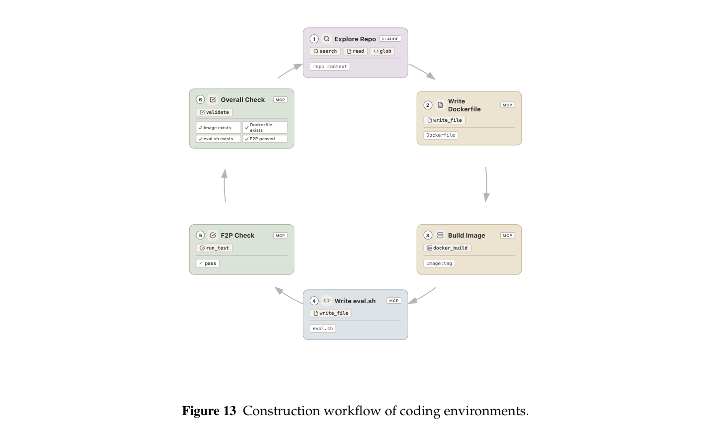
Agent 编码任务通常在隔离环境中运行，agent 与文件和系统工具交互，以解决给定问题。因此，可复现的执行环境对训练和评测都至关重要，它们提供忠实 rollout 和验证所需的基础设施。我们采用 Claude Code + MCP 的方法，为每个实例自动生成 Docker 镜像。核心思想是利用 Claude Code 探索仓库代码与文档，收集足够上下文，并生成可运行的 Dockerfile。为减轻幻觉、确保可靠性，LLM 被限制为仅通过指定的 MCP 工具集与环境交互。例如，镜像构建只能由 build_image 工具触发；该工具通过 Dockerfile 的 COPY 指令将干净的仓库快照复制到镜像中，并保证镜像内的仓库保持未修改。同样，verify_task_completion 工具检查 Dockerfile、评测脚本、构建镜像等全部必需产物是否存在，以及 Fail2Pass 验证是否通过。图 13 展示构建工作流。结合 LLM 驱动探索的灵活性和基于规则的工具验证，我们快速、可靠地生成了约 220,000 个 Docker 镜像。
B 结合持续训练的 MTP
除 SFT 数据优化与 RL 优化外，Ling-2.6 还在持续训练期间通过 MTP 进一步提升推理效率。MTP 能改善基础模型性能，也能作为 speculative decoding 的草稿模型，从而显著加速推理。然而，标准 MTP 层（Gloeckle et al., 2024; DeepSeek-AI, 2024）仅被训练为预测下一个 token。
（末句接续原文第 43 页。）
推理时用它预测多个 token，会产生训练与推理差异（Leviathan et al., 2023），降低接受长度。为缓解这一问题，必须在训练期间引入多个 MTP 层。因此，我们在后训练阶段加入两个额外 MTP 层，并继续训练这些 MTP 层。
如表 8 所示，在私有评测数据集上，保持相同推测步数（即四步）时，持续训练后的 MTP 模型相比标准 MTP 模型，接受长度获得适度提升。我们还观察到，仅使用第一个 MTP 层预测所有后续 token，会使接受长度明显增加。这表明，新引入的 MTP 层在持续训练设置中可能仍未得到充分训练。为进一步检验这一假设，我们在不同 MTP 层间共享参数（Zeng et al., 2026a），并对除第一层外所有 MTP 层的 gradient 进行分离，阻止其传播至基础模型。结果表明，该策略在降低内存开销的同时，进一步改善了推理中的接受长度。